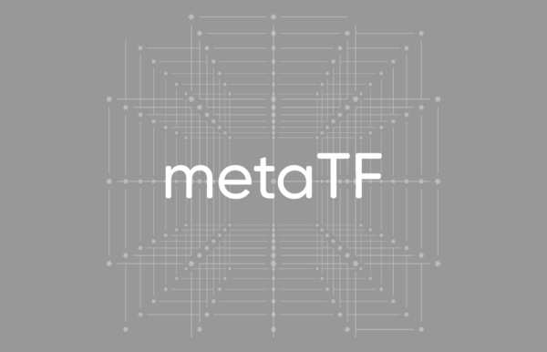

<!DOCTYPE html>
<html class="writer-html5" lang="en" >
<head>
  <meta charset="utf-8" /><meta name="generator" content="Docutils 0.17.1: http://docutils.sourceforge.net/" />

  <meta name="viewport" content="width=device-width, initial-scale=1.0" />
  <title>Akida vision edge learning &mdash; Akida Examples  documentation</title>
      <link rel="stylesheet" href="../../_static/pygments.css" type="text/css" />
      <link rel="stylesheet" href="../../_static/css/theme.css" type="text/css" />
      <link rel="stylesheet" href="../../_static/sg_gallery.css" type="text/css" />
      <link rel="stylesheet" href="../../_static/sg_gallery-binder.css" type="text/css" />
      <link rel="stylesheet" href="../../_static/sg_gallery-dataframe.css" type="text/css" />
      <link rel="stylesheet" href="../../_static/sg_gallery-rendered-html.css" type="text/css" />
      <link rel="stylesheet" href="../../_static/custom.css" type="text/css" />
    <link rel="shortcut icon" href="../../_static/favicon.ico"/>
  <!--[if lt IE 9]>
    <script src="../../_static/js/html5shiv.min.js"></script>
  <![endif]-->
  
        <script data-url_root="../../" id="documentation_options" src="../../_static/documentation_options.js"></script>
        <script src="../../_static/jquery.js"></script>
        <script src="../../_static/underscore.js"></script>
        <script src="../../_static/doctools.js"></script>
    <script src="../../_static/js/theme.js"></script>
    <link rel="index" title="Index" href="../../genindex.html" />
    <link rel="search" title="Search" href="../../search.html" />
    <link rel="next" title="Akida edge learning for keyword spotting" href="plot_1_edge_learning_kws.html" />
    <link rel="prev" title="Edge examples" href="index.html" /> 
</head>

<body class="wy-body-for-nav"> 
  <div class="wy-grid-for-nav">
    <nav data-toggle="wy-nav-shift" class="wy-nav-side">
      <div class="wy-side-scroll">
        <div class="wy-side-nav-search"  style="background: #989898" >
            <a href="../../index.html">
            
          </a>
              <div class="version">
                Akida, 2nd Generation
              </div>
<div role="search">
  <form id="rtd-search-form" class="wy-form" action="../../search.html" method="get">
    <input type="text" name="q" placeholder="Search docs" />
    <input type="hidden" name="check_keywords" value="yes" />
    <input type="hidden" name="area" value="default" />
  </form>
</div>
        </div><div class="wy-menu wy-menu-vertical" data-spy="affix" role="navigation" aria-label="Navigation menu">
              <ul class="current">
<li class="toctree-l1"><a class="reference internal" href="../../index.html">Overview</a></li>
<li class="toctree-l1"><a class="reference internal" href="../../installation.html">Installation</a><ul>
<li class="toctree-l2"><a class="reference internal" href="../../installation.html#requirements">Requirements</a></li>
<li class="toctree-l2"><a class="reference internal" href="../../installation.html#quick-installation">Quick installation</a></li>
<li class="toctree-l2"><a class="reference internal" href="../../installation.html#running-examples">Running examples</a></li>
</ul>
</li>
<li class="toctree-l1"><a class="reference internal" href="../../user_guide/user_guide.html">User guide</a><ul>
<li class="toctree-l2"><a class="reference internal" href="../../user_guide/getting_started.html">Getting started</a><ul>
<li class="toctree-l3"><a class="reference internal" href="../../user_guide/getting_started.html#for-beginners">For beginners</a></li>
<li class="toctree-l3"><a class="reference internal" href="../../user_guide/getting_started.html#for-users-familiar-with-deep-learning">For users familiar with deep-learning</a></li>
</ul>
</li>
<li class="toctree-l2"><a class="reference internal" href="../../user_guide/akida.html">Akida user guide</a><ul>
<li class="toctree-l3"><a class="reference internal" href="../../user_guide/akida.html#introduction">Introduction</a><ul>
<li class="toctree-l4"><a class="reference internal" href="../../user_guide/akida.html#akida-layers">Akida layers</a></li>
<li class="toctree-l4"><a class="reference internal" href="../../user_guide/akida.html#input-format">Input Format</a></li>
<li class="toctree-l4"><a class="reference internal" href="../../user_guide/akida.html#a-versatile-machine-learning-framework">A versatile machine learning framework</a></li>
</ul>
</li>
<li class="toctree-l3"><a class="reference internal" href="../../user_guide/akida.html#the-sequential-model">The Sequential model</a><ul>
<li class="toctree-l4"><a class="reference internal" href="../../user_guide/akida.html#specifying-the-model">Specifying the model</a></li>
<li class="toctree-l4"><a class="reference internal" href="../../user_guide/akida.html#accessing-layer-parameters-and-weights">Accessing layer parameters and weights</a></li>
<li class="toctree-l4"><a class="reference internal" href="../../user_guide/akida.html#inference">Inference</a></li>
<li class="toctree-l4"><a class="reference internal" href="../../user_guide/akida.html#saving-and-loading">Saving and loading</a></li>
<li class="toctree-l4"><a class="reference internal" href="../../user_guide/akida.html#input-layer-types">Input layer types</a></li>
<li class="toctree-l4"><a class="reference internal" href="../../user_guide/akida.html#data-processing-layer-types">Data-Processing layer types</a></li>
</ul>
</li>
<li class="toctree-l3"><a class="reference internal" href="../../user_guide/akida.html#model-hardware-mapping">Model Hardware Mapping</a><ul>
<li class="toctree-l4"><a class="reference internal" href="../../user_guide/akida.html#devices">Devices</a></li>
<li class="toctree-l4"><a class="reference internal" href="../../user_guide/akida.html#model-mapping">Model mapping</a></li>
<li class="toctree-l4"><a class="reference internal" href="../../user_guide/akida.html#advanced-mapping-details-and-hardware-devices-usage">Advanced Mapping Details and Hardware Devices Usage</a></li>
<li class="toctree-l4"><a class="reference internal" href="../../user_guide/akida.html#performances-measurement">Performances measurement</a></li>
</ul>
</li>
<li class="toctree-l3"><a class="reference internal" href="../../user_guide/akida.html#id1">Using Akida Edge learning</a><ul>
<li class="toctree-l4"><a class="reference internal" href="../../user_guide/akida.html#learning-constraints">Learning constraints</a></li>
<li class="toctree-l4"><a class="reference internal" href="../../user_guide/akida.html#compiling-a-layer">Compiling a layer</a></li>
</ul>
</li>
</ul>
</li>
<li class="toctree-l2"><a class="reference internal" href="../../user_guide/cnn2snn.html">CNN2SNN toolkit</a><ul>
<li class="toctree-l3"><a class="reference internal" href="../../user_guide/cnn2snn.html#overview">Overview</a><ul>
<li class="toctree-l4"><a class="reference internal" href="../../user_guide/cnn2snn.html#conversion-workflow">Conversion workflow</a></li>
<li class="toctree-l4"><a class="reference internal" href="../../user_guide/cnn2snn.html#typical-training-scenario">Typical training scenario</a></li>
<li class="toctree-l4"><a class="reference internal" href="../../user_guide/cnn2snn.html#design-compatibility-constraints">Design compatibility constraints</a></li>
<li class="toctree-l4"><a class="reference internal" href="../../user_guide/cnn2snn.html#quantization-compatibility-constraints">Quantization compatibility constraints</a></li>
<li class="toctree-l4"><a class="reference internal" href="../../user_guide/cnn2snn.html#command-line-interface">Command-line interface</a></li>
</ul>
</li>
<li class="toctree-l3"><a class="reference internal" href="../../user_guide/cnn2snn.html#layers-considerations">Layers Considerations</a><ul>
<li class="toctree-l4"><a class="reference internal" href="../../user_guide/cnn2snn.html#supported-layer-types">Supported layer types</a></li>
<li class="toctree-l4"><a class="reference internal" href="../../user_guide/cnn2snn.html#cnn2snn-quantization-aware-layers">CNN2SNN Quantization-aware layers</a></li>
<li class="toctree-l4"><a class="reference internal" href="../../user_guide/cnn2snn.html#training-only-layers">Training-Only Layers</a></li>
<li class="toctree-l4"><a class="reference internal" href="../../user_guide/cnn2snn.html#first-layers">First Layers</a></li>
<li class="toctree-l4"><a class="reference internal" href="../../user_guide/cnn2snn.html#id6">Final Layers</a></li>
</ul>
</li>
<li class="toctree-l3"><a class="reference internal" href="../../user_guide/cnn2snn.html#tips-and-tricks">Tips and Tricks</a></li>
</ul>
</li>
<li class="toctree-l2"><a class="reference internal" href="../../user_guide/akida_models.html">Akida models zoo</a><ul>
<li class="toctree-l3"><a class="reference internal" href="../../user_guide/akida_models.html#overview">Overview</a></li>
<li class="toctree-l3"><a class="reference internal" href="../../user_guide/akida_models.html#command-line-interface-for-model-creation">Command-line interface for model creation</a></li>
<li class="toctree-l3"><a class="reference internal" href="../../user_guide/akida_models.html#command-line-interface-for-model-training">Command-line interface for model training</a><ul>
<li class="toctree-l4"><a class="reference internal" href="../../user_guide/akida_models.html#utk-face-training">UTK Face training</a></li>
<li class="toctree-l4"><a class="reference internal" href="../../user_guide/akida_models.html#kws-training">KWS training</a></li>
<li class="toctree-l4"><a class="reference internal" href="../../user_guide/akida_models.html#yolo-training">YOLO training</a></li>
<li class="toctree-l4"><a class="reference internal" href="../../user_guide/akida_models.html#akidanet-training">AkidaNet training</a></li>
</ul>
</li>
<li class="toctree-l3"><a class="reference internal" href="../../user_guide/akida_models.html#command-line-interface-for-model-evaluation">Command-line interface for model evaluation</a></li>
<li class="toctree-l3"><a class="reference internal" href="../../user_guide/akida_models.html#command-line-interface-to-evaluate-model-macs">Command-line interface to evaluate model MACS</a></li>
<li class="toctree-l3"><a class="reference internal" href="../../user_guide/akida_models.html#id1">Layer Blocks</a></li>
</ul>
</li>
<li class="toctree-l2"><a class="reference internal" href="../../user_guide/hw_constraints.html">Hardware constraints</a><ul>
<li class="toctree-l3"><a class="reference internal" href="../../user_guide/hw_constraints.html#inputconvolutional">InputConvolutional</a></li>
<li class="toctree-l3"><a class="reference internal" href="../../user_guide/hw_constraints.html#convolutional">Convolutional</a></li>
<li class="toctree-l3"><a class="reference internal" href="../../user_guide/hw_constraints.html#separableconvolutional">SeparableConvolutional</a></li>
<li class="toctree-l3"><a class="reference internal" href="../../user_guide/hw_constraints.html#fullyconnected">FullyConnected</a></li>
</ul>
</li>
<li class="toctree-l2"><a class="reference internal" href="../../user_guide/compatibility.html">Akida versions compatibility</a><ul>
<li class="toctree-l3"><a class="reference internal" href="../../user_guide/compatibility.html#upgrading-models-with-legacy-quantizers">Upgrading models with legacy quantizers</a></li>
</ul>
</li>
</ul>
</li>
<li class="toctree-l1"><a class="reference internal" href="../../api_reference/api_reference.html">API reference</a><ul>
<li class="toctree-l2"><a class="reference internal" href="../../api_reference/akida_apis.html">Akida runtime</a><ul>
<li class="toctree-l3"><a class="reference internal" href="../../api_reference/akida_apis.html#model">Model</a></li>
<li class="toctree-l3"><a class="reference internal" href="../../api_reference/akida_apis.html#layer">Layer</a><ul>
<li class="toctree-l4"><a class="reference internal" href="../../api_reference/akida_apis.html#id1">Layer</a></li>
<li class="toctree-l4"><a class="reference internal" href="../../api_reference/akida_apis.html#mapping">Mapping</a></li>
</ul>
</li>
<li class="toctree-l3"><a class="reference internal" href="../../api_reference/akida_apis.html#akida-v1-layers">Akida V1 layers</a></li>
<li class="toctree-l3"><a class="reference internal" href="../../api_reference/akida_apis.html#akida-v2-layers">Akida V2 layers</a></li>
<li class="toctree-l3"><a class="reference internal" href="../../api_reference/akida_apis.html#layer-parameters">Layer parameters</a><ul>
<li class="toctree-l4"><a class="reference internal" href="../../api_reference/akida_apis.html#layertype">LayerType</a></li>
<li class="toctree-l4"><a class="reference internal" href="../../api_reference/akida_apis.html#padding">Padding</a></li>
<li class="toctree-l4"><a class="reference internal" href="../../api_reference/akida_apis.html#pooltype">PoolType</a></li>
</ul>
</li>
<li class="toctree-l3"><a class="reference internal" href="../../api_reference/akida_apis.html#optimizers">Optimizers</a></li>
<li class="toctree-l3"><a class="reference internal" href="../../api_reference/akida_apis.html#sequence">Sequence</a><ul>
<li class="toctree-l4"><a class="reference internal" href="../../api_reference/akida_apis.html#id2">Sequence</a></li>
<li class="toctree-l4"><a class="reference internal" href="../../api_reference/akida_apis.html#backendtype">BackendType</a></li>
<li class="toctree-l4"><a class="reference internal" href="../../api_reference/akida_apis.html#pass">Pass</a></li>
</ul>
</li>
<li class="toctree-l3"><a class="reference internal" href="../../api_reference/akida_apis.html#device">Device</a><ul>
<li class="toctree-l4"><a class="reference internal" href="../../api_reference/akida_apis.html#id3">Device</a></li>
<li class="toctree-l4"><a class="reference internal" href="../../api_reference/akida_apis.html#hwversion">HwVersion</a></li>
</ul>
</li>
<li class="toctree-l3"><a class="reference internal" href="../../api_reference/akida_apis.html#hwdevice">HWDevice</a><ul>
<li class="toctree-l4"><a class="reference internal" href="../../api_reference/akida_apis.html#id4">HWDevice</a></li>
<li class="toctree-l4"><a class="reference internal" href="../../api_reference/akida_apis.html#socdriver">SocDriver</a></li>
<li class="toctree-l4"><a class="reference internal" href="../../api_reference/akida_apis.html#clockmode">ClockMode</a></li>
</ul>
</li>
<li class="toctree-l3"><a class="reference internal" href="../../api_reference/akida_apis.html#powermeter">PowerMeter</a></li>
<li class="toctree-l3"><a class="reference internal" href="../../api_reference/akida_apis.html#np">NP</a></li>
<li class="toctree-l3"><a class="reference internal" href="../../api_reference/akida_apis.html#tools">Tools</a><ul>
<li class="toctree-l4"><a class="reference internal" href="../../api_reference/akida_apis.html#sparsity">Sparsity</a></li>
<li class="toctree-l4"><a class="reference internal" href="../../api_reference/akida_apis.html#compatibility">Compatibility</a></li>
</ul>
</li>
</ul>
</li>
<li class="toctree-l2"><a class="reference internal" href="../../api_reference/cnn2snn_apis.html">CNN2SNN</a><ul>
<li class="toctree-l3"><a class="reference internal" href="../../api_reference/cnn2snn_apis.html#akida-version">Akida version</a></li>
<li class="toctree-l3"><a class="reference internal" href="../../api_reference/cnn2snn_apis.html#conversion">Conversion</a></li>
<li class="toctree-l3"><a class="reference internal" href="../../api_reference/cnn2snn_apis.html#utils">Utils</a></li>
<li class="toctree-l3"><a class="reference internal" href="../../api_reference/cnn2snn_apis.html#calibration">Calibration</a></li>
<li class="toctree-l3"><a class="reference internal" href="../../api_reference/cnn2snn_apis.html#transforms">Transforms</a></li>
<li class="toctree-l3"><a class="reference internal" href="../../api_reference/cnn2snn_apis.html#constraint">Constraint</a></li>
<li class="toctree-l3"><a class="reference internal" href="../../api_reference/cnn2snn_apis.html#quantization">Quantization</a></li>
<li class="toctree-l3"><a class="reference internal" href="../../api_reference/cnn2snn_apis.html#quantizers">Quantizers</a><ul>
<li class="toctree-l4"><a class="reference internal" href="../../api_reference/cnn2snn_apis.html#weightquantizer">WeightQuantizer</a></li>
<li class="toctree-l4"><a class="reference internal" href="../../api_reference/cnn2snn_apis.html#linearweightquantizer">LinearWeightQuantizer</a></li>
<li class="toctree-l4"><a class="reference internal" href="../../api_reference/cnn2snn_apis.html#stdweightquantizer">StdWeightQuantizer</a></li>
<li class="toctree-l4"><a class="reference internal" href="../../api_reference/cnn2snn_apis.html#stdperaxisquantizer">StdPerAxisQuantizer</a></li>
<li class="toctree-l4"><a class="reference internal" href="../../api_reference/cnn2snn_apis.html#maxquantizer">MaxQuantizer</a></li>
<li class="toctree-l4"><a class="reference internal" href="../../api_reference/cnn2snn_apis.html#maxperaxisquantizer">MaxPerAxisQuantizer</a></li>
</ul>
</li>
<li class="toctree-l3"><a class="reference internal" href="../../api_reference/cnn2snn_apis.html#quantized-layers">Quantized layers</a><ul>
<li class="toctree-l4"><a class="reference internal" href="../../api_reference/cnn2snn_apis.html#quantizedconv2d">QuantizedConv2D</a></li>
<li class="toctree-l4"><a class="reference internal" href="../../api_reference/cnn2snn_apis.html#quantizeddense">QuantizedDense</a></li>
<li class="toctree-l4"><a class="reference internal" href="../../api_reference/cnn2snn_apis.html#quantizedseparableconv2d">QuantizedSeparableConv2D</a></li>
<li class="toctree-l4"><a class="reference internal" href="../../api_reference/cnn2snn_apis.html#quantizedactivation">QuantizedActivation</a></li>
<li class="toctree-l4"><a class="reference internal" href="../../api_reference/cnn2snn_apis.html#activationdiscreterelu">ActivationDiscreteRelu</a></li>
<li class="toctree-l4"><a class="reference internal" href="../../api_reference/cnn2snn_apis.html#quantizedrelu">QuantizedReLU</a></li>
</ul>
</li>
</ul>
</li>
<li class="toctree-l2"><a class="reference internal" href="../../api_reference/quantizeml_apis.html">QuantizeML</a><ul>
<li class="toctree-l3"><a class="reference internal" href="../../api_reference/quantizeml_apis.html#layers">Layers</a><ul>
<li class="toctree-l4"><a class="reference internal" href="../../api_reference/quantizeml_apis.html#reshaping">Reshaping</a></li>
<li class="toctree-l4"><a class="reference internal" href="../../api_reference/quantizeml_apis.html#activations">Activations</a></li>
<li class="toctree-l4"><a class="reference internal" href="../../api_reference/quantizeml_apis.html#attention">Attention</a></li>
<li class="toctree-l4"><a class="reference internal" href="../../api_reference/quantizeml_apis.html#normalization">Normalization</a></li>
<li class="toctree-l4"><a class="reference internal" href="../../api_reference/quantizeml_apis.html#convolution">Convolution</a></li>
<li class="toctree-l4"><a class="reference internal" href="../../api_reference/quantizeml_apis.html#depthwise-convolution">Depthwise convolution</a></li>
<li class="toctree-l4"><a class="reference internal" href="../../api_reference/quantizeml_apis.html#separable-convolution">Separable convolution</a></li>
<li class="toctree-l4"><a class="reference internal" href="../../api_reference/quantizeml_apis.html#dense">Dense</a></li>
<li class="toctree-l4"><a class="reference internal" href="../../api_reference/quantizeml_apis.html#skip-connection">Skip connection</a></li>
<li class="toctree-l4"><a class="reference internal" href="../../api_reference/quantizeml_apis.html#pooling">Pooling</a></li>
<li class="toctree-l4"><a class="reference internal" href="../../api_reference/quantizeml_apis.html#shiftmax">Shiftmax</a></li>
<li class="toctree-l4"><a class="reference internal" href="../../api_reference/quantizeml_apis.html#transformers">Transformers</a></li>
<li class="toctree-l4"><a class="reference internal" href="../../api_reference/quantizeml_apis.html#rescaling">Rescaling</a></li>
<li class="toctree-l4"><a class="reference internal" href="../../api_reference/quantizeml_apis.html#dropout">Dropout</a></li>
<li class="toctree-l4"><a class="reference internal" href="../../api_reference/quantizeml_apis.html#quantizers">Quantizers</a></li>
<li class="toctree-l4"><a class="reference internal" href="../../api_reference/quantizeml_apis.html#quantization-parameters">Quantization parameters</a></li>
<li class="toctree-l4"><a class="reference internal" href="../../api_reference/quantizeml_apis.html#calibration">Calibration</a></li>
<li class="toctree-l4"><a class="reference internal" href="../../api_reference/quantizeml_apis.html#recording">Recording</a></li>
</ul>
</li>
<li class="toctree-l3"><a class="reference internal" href="../../api_reference/quantizeml_apis.html#models">Models</a><ul>
<li class="toctree-l4"><a class="reference internal" href="../../api_reference/quantizeml_apis.html#transforms">Transforms</a></li>
<li class="toctree-l4"><a class="reference internal" href="../../api_reference/quantizeml_apis.html#quantization">Quantization</a></li>
<li class="toctree-l4"><a class="reference internal" href="../../api_reference/quantizeml_apis.html#utils">Utils</a></li>
</ul>
</li>
<li class="toctree-l3"><a class="reference internal" href="../../api_reference/quantizeml_apis.html#tensors">Tensors</a><ul>
<li class="toctree-l4"><a class="reference internal" href="../../api_reference/quantizeml_apis.html#qtensor">QTensor</a></li>
<li class="toctree-l4"><a class="reference internal" href="../../api_reference/quantizeml_apis.html#fixedpoint">FixedPoint</a></li>
<li class="toctree-l4"><a class="reference internal" href="../../api_reference/quantizeml_apis.html#qfloat">QFloat</a></li>
</ul>
</li>
</ul>
</li>
<li class="toctree-l2"><a class="reference internal" href="../../api_reference/akida_models_apis.html">Akida models</a><ul>
<li class="toctree-l3"><a class="reference internal" href="../../api_reference/akida_models_apis.html#layer-blocks">Layer blocks</a><ul>
<li class="toctree-l4"><a class="reference internal" href="../../api_reference/akida_models_apis.html#cnn-blocks">CNN blocks</a></li>
<li class="toctree-l4"><a class="reference internal" href="../../api_reference/akida_models_apis.html#transformers-blocks">Transformers blocks</a></li>
<li class="toctree-l4"><a class="reference internal" href="../../api_reference/akida_models_apis.html#transposed-blocks">Transposed blocks</a></li>
<li class="toctree-l4"><a class="reference internal" href="../../api_reference/akida_models_apis.html#detection-block">Detection block</a></li>
</ul>
</li>
<li class="toctree-l3"><a class="reference internal" href="../../api_reference/akida_models_apis.html#helpers">Helpers</a><ul>
<li class="toctree-l4"><a class="reference internal" href="../../api_reference/akida_models_apis.html#gamma-constraint">Gamma constraint</a></li>
<li class="toctree-l4"><a class="reference internal" href="../../api_reference/akida_models_apis.html#unfusing-separableconvolutional">Unfusing SeparableConvolutional</a></li>
</ul>
</li>
<li class="toctree-l3"><a class="reference internal" href="../../api_reference/akida_models_apis.html#knowledge-distillation">Knowledge distillation</a></li>
<li class="toctree-l3"><a class="reference internal" href="../../api_reference/akida_models_apis.html#pruning">Pruning</a></li>
<li class="toctree-l3"><a class="reference internal" href="../../api_reference/akida_models_apis.html#training">Training</a></li>
<li class="toctree-l3"><a class="reference internal" href="../../api_reference/akida_models_apis.html#macs">MACS</a></li>
<li class="toctree-l3"><a class="reference internal" href="../../api_reference/akida_models_apis.html#utils">Utils</a></li>
<li class="toctree-l3"><a class="reference internal" href="../../api_reference/akida_models_apis.html#model-zoo">Model zoo</a><ul>
<li class="toctree-l4"><a class="reference internal" href="../../api_reference/akida_models_apis.html#akidanet">AkidaNet</a></li>
<li class="toctree-l4"><a class="reference internal" href="../../api_reference/akida_models_apis.html#mobilenet">Mobilenet</a></li>
<li class="toctree-l4"><a class="reference internal" href="../../api_reference/akida_models_apis.html#ds-cnn">DS-CNN</a></li>
<li class="toctree-l4"><a class="reference internal" href="../../api_reference/akida_models_apis.html#vgg">VGG</a></li>
<li class="toctree-l4"><a class="reference internal" href="../../api_reference/akida_models_apis.html#yolo">YOLO</a></li>
<li class="toctree-l4"><a class="reference internal" href="../../api_reference/akida_models_apis.html#pointnet">PointNet++</a></li>
<li class="toctree-l4"><a class="reference internal" href="../../api_reference/akida_models_apis.html#gxnor">GXNOR</a></li>
<li class="toctree-l4"><a class="reference internal" href="../../api_reference/akida_models_apis.html#centernet">CenterNet</a></li>
<li class="toctree-l4"><a class="reference internal" href="../../api_reference/akida_models_apis.html#akidaunet">AkidaUNet</a></li>
<li class="toctree-l4"><a class="reference internal" href="../../api_reference/akida_models_apis.html#transformers">Transformers</a></li>
</ul>
</li>
</ul>
</li>
</ul>
</li>
<li class="toctree-l1 current"><a class="reference internal" href="../index.html">Examples</a><ul class="current">
<li class="toctree-l2"><a class="reference internal" href="../index.html#general-examples">General examples</a></li>
<li class="toctree-l2"><a class="reference internal" href="../index.html#cnn2snn-tutorials">CNN2SNN tutorials</a></li>
<li class="toctree-l2 current"><a class="reference internal" href="../index.html#edge-examples">Edge examples</a><ul class="current">
<li class="toctree-l3"><a class="reference internal" href="../general/index.html">General examples</a><ul>
<li class="toctree-l4"><a class="reference internal" href="../general/plot_0_gxnor_mnist.html">GXNOR/MNIST inference</a></li>
<li class="toctree-l4"><a class="reference internal" href="../general/plot_1_akidanet_imagenet.html">AkidaNet/ImageNet inference</a></li>
<li class="toctree-l4"><a class="reference internal" href="../general/plot_2_ds_cnn_kws.html">DS-CNN/KWS inference</a></li>
<li class="toctree-l4"><a class="reference internal" href="../general/plot_3_regression.html">Regression tutorial</a></li>
<li class="toctree-l4"><a class="reference internal" href="../general/plot_4_transfer_learning.html">Transfer learning with AkidaNet for PlantVillage</a></li>
<li class="toctree-l4"><a class="reference internal" href="../general/plot_5_voc_yolo_detection.html">YOLO/PASCAL-VOC detection tutorial</a></li>
</ul>
</li>
<li class="toctree-l3"><a class="reference internal" href="../cnn2snn/index.html">CNN2SNN tutorials</a><ul>
<li class="toctree-l4"><a class="reference internal" href="../cnn2snn/plot_0_cnn_flow.html">CNN conversion flow tutorial</a></li>
<li class="toctree-l4"><a class="reference internal" href="../cnn2snn/plot_1_advanced_cnn2snn.html">Advanced CNN2SNN tutorial</a></li>
</ul>
</li>
<li class="toctree-l3 current"><a class="reference internal" href="index.html">Edge examples</a><ul class="current">
<li class="toctree-l4 current"><a class="current reference internal" href="#">Akida vision edge learning</a></li>
<li class="toctree-l4"><a class="reference internal" href="plot_1_edge_learning_kws.html">Akida edge learning for keyword spotting</a></li>
<li class="toctree-l4"><a class="reference internal" href="plot_2_edge_learning_parameters.html">Tips to set Akida learning parameters</a></li>
</ul>
</li>
</ul>
</li>
</ul>
</li>
<li class="toctree-l1"><a class="reference internal" href="../../zoo_performances.html">Model zoo performances</a><ul>
<li class="toctree-l2"><a class="reference internal" href="../../zoo_performances.html#image-icon-ref-image-domain"> Image domain</a><ul>
<li class="toctree-l3"><a class="reference internal" href="../../zoo_performances.html#classification">Classification</a></li>
<li class="toctree-l3"><a class="reference internal" href="../../zoo_performances.html#object-detection">Object detection</a></li>
<li class="toctree-l3"><a class="reference internal" href="../../zoo_performances.html#regression">Regression</a></li>
<li class="toctree-l3"><a class="reference internal" href="../../zoo_performances.html#face-recognition">Face recognition</a></li>
</ul>
</li>
<li class="toctree-l2"><a class="reference internal" href="../../zoo_performances.html#audio-icon-ref-audio-domain"> Audio domain</a><ul>
<li class="toctree-l3"><a class="reference internal" href="../../zoo_performances.html#keyword-spotting">Keyword spotting</a></li>
</ul>
</li>
<li class="toctree-l2"><a class="reference internal" href="../../zoo_performances.html#pointcloud-icon-ref-point-cloud"> Point cloud</a><ul>
<li class="toctree-l3"><a class="reference internal" href="../../zoo_performances.html#id1">Classification</a></li>
</ul>
</li>
</ul>
</li>
<li class="toctree-l1"><a class="reference external" href="https://github.com/Brainchip-Inc/akida_examples/releases">Changelog</a></li>
<li class="toctree-l1"><a class="reference external" href="https://support.brainchip.com/portal/home">Support</a></li>
<li class="toctree-l1"><a class="reference internal" href="../../license.html">License</a></li>
</ul>

        </div>
      </div>
    </nav>

    <section data-toggle="wy-nav-shift" class="wy-nav-content-wrap"><nav class="wy-nav-top" aria-label="Mobile navigation menu"  style="background: #989898" >
          <i data-toggle="wy-nav-top" class="fa fa-bars"></i>
          <a href="../../index.html">Akida Examples</a>
      </nav>

      <div class="wy-nav-content">
        <div class="rst-content">
          <div role="navigation" aria-label="Page navigation">
  <ul class="wy-breadcrumbs">
      <li><a href="../../index.html" class="icon icon-home"></a> &raquo;</li>
          <li><a href="../index.html">Akida examples</a> &raquo;</li>
          <li><a href="index.html">Edge examples</a> &raquo;</li>
      <li>Akida vision edge learning</li>
      <li class="wy-breadcrumbs-aside">
      </li>
  </ul>
  <hr/>
</div>
          <div role="main" class="document" itemscope="itemscope" itemtype="http://schema.org/Article">
           <div itemprop="articleBody">
             
  <div class="sphx-glr-download-link-note admonition note">
<p class="admonition-title">Note</p>
<p>Click <a class="reference internal" href="#sphx-glr-download-examples-edge-plot-0-edge-learning-vision-py"><span class="std std-ref">here</span></a>
to download the full example code</p>
</div>
<section class="sphx-glr-example-title" id="akida-vision-edge-learning">
<span id="sphx-glr-examples-edge-plot-0-edge-learning-vision-py"></span><h1>Akida vision edge learning<a class="headerlink" href="#akida-vision-edge-learning" title="Permalink to this headline"></a></h1>
<p>This tutorial demonstrates the Akida NSoC <strong>edge learning</strong> capabilities using
its built-in learning algorithm.
It focuses on an image classification example, where an existing Akida network
is re-trained to be able to classify images from 4 new classes.</p>
<p>Just a few samples (few-shot learning) of the new classes are sufficient
to augment the Akida model with extra classes, while preserving high accuracy.</p>
<p>Please refer to the <a class="reference external" href="plot_1_edge_learning_kws.html">keyword spotting (KWS) tutorial</a>
for edge learning documentation, parameters fine tuning and steps details.</p>
<section id="dataset-preparation">
<h2>1. Dataset preparation<a class="headerlink" href="#dataset-preparation" title="Permalink to this headline"></a></h2>
<div class="highlight-default notranslate"><div class="highlight"><pre><span></span><span class="kn">from</span> <span class="nn">akida</span> <span class="kn">import</span> <span class="n">FullyConnected</span>

<span class="kn">import</span> <span class="nn">tensorflow_datasets</span> <span class="k">as</span> <span class="nn">tfds</span>

<span class="c1"># Retrieve TensorFlow `coil100 &lt;https://www.tensorflow.org/datasets/catalog/coil100&gt;`__</span>
<span class="c1"># dataset</span>
<span class="n">ds</span><span class="p">,</span> <span class="n">ds_info</span> <span class="o">=</span> <span class="n">tfds</span><span class="o">.</span><span class="n">load</span><span class="p">(</span><span class="s1">&#39;coil100:2.*.*&#39;</span><span class="p">,</span> <span class="n">split</span><span class="o">=</span><span class="s1">&#39;train&#39;</span><span class="p">,</span> <span class="n">with_info</span><span class="o">=</span><span class="kc">True</span><span class="p">)</span>
<span class="nb">print</span><span class="p">(</span><span class="n">ds_info</span><span class="o">.</span><span class="n">description</span><span class="p">)</span>
</pre></div>
</div>
<div class="sphx-glr-script-out highlight-none notranslate"><div class="highlight"><pre><span></span>Downloading and preparing dataset 124.63 MiB (download: 124.63 MiB, generated: 124.74 MiB, total: 249.37 MiB) to /root/tensorflow_datasets/coil100/2.0.0...

Dl Completed...: 0 url [00:00, ? url/s]

Dl Size...: 0 MiB [00:00, ? MiB/s]


Extraction completed...: 0 file [00:00, ? file/s]
Dl Completed...:   0%|          | 0/1 [00:00&lt;?, ? url/s]

Dl Size...: 0 MiB [00:00, ? MiB/s]


Extraction completed...: 0 file [00:00, ? file/s]
Dl Completed...:   0%|          | 0/1 [00:00&lt;?, ? url/s]

Dl Size...:   0%|          | 0/124 [00:00&lt;?, ? MiB/s]


Extraction completed...: 0 file [00:00, ? file/s]

Dl Size...:   1%|          | 1/124 [00:01&lt;02:50,  1.39s/ MiB]
Dl Completed...:   0%|          | 0/1 [00:01&lt;?, ? url/s]

Dl Size...:   1%|          | 1/124 [00:01&lt;02:50,  1.39s/ MiB]


Extraction completed...: 0 file [00:01, ? file/s]

Dl Size...:   2%|1         | 2/124 [00:01&lt;01:33,  1.30 MiB/s]
Dl Completed...:   0%|          | 0/1 [00:01&lt;?, ? url/s]

Dl Size...:   2%|1         | 2/124 [00:01&lt;01:33,  1.30 MiB/s]


Extraction completed...: 0 file [00:01, ? file/s]

Dl Size...:   2%|2         | 3/124 [00:02&lt;01:08,  1.77 MiB/s]
Dl Completed...:   0%|          | 0/1 [00:02&lt;?, ? url/s]

Dl Size...:   2%|2         | 3/124 [00:02&lt;01:08,  1.77 MiB/s]


Extraction completed...: 0 file [00:02, ? file/s]

Dl Size...:   3%|3         | 4/124 [00:02&lt;00:53,  2.24 MiB/s]
Dl Completed...:   0%|          | 0/1 [00:02&lt;?, ? url/s]

Dl Size...:   3%|3         | 4/124 [00:02&lt;00:53,  2.24 MiB/s]


Extraction completed...: 0 file [00:02, ? file/s]

Dl Size...:   4%|4         | 5/124 [00:02&lt;00:45,  2.61 MiB/s]
Dl Completed...:   0%|          | 0/1 [00:02&lt;?, ? url/s]

Dl Size...:   4%|4         | 5/124 [00:02&lt;00:45,  2.61 MiB/s]


Extraction completed...: 0 file [00:02, ? file/s]

Dl Size...:   5%|4         | 6/124 [00:02&lt;00:42,  2.80 MiB/s]
Dl Completed...:   0%|          | 0/1 [00:02&lt;?, ? url/s]

Dl Size...:   5%|4         | 6/124 [00:02&lt;00:42,  2.80 MiB/s]


Extraction completed...: 0 file [00:02, ? file/s]

Dl Size...:   6%|5         | 7/124 [00:03&lt;00:38,  3.08 MiB/s]
Dl Completed...:   0%|          | 0/1 [00:03&lt;?, ? url/s]

Dl Size...:   6%|5         | 7/124 [00:03&lt;00:38,  3.08 MiB/s]


Extraction completed...: 0 file [00:03, ? file/s]

Dl Size...:   6%|6         | 8/124 [00:03&lt;00:35,  3.31 MiB/s]
Dl Completed...:   0%|          | 0/1 [00:03&lt;?, ? url/s]

Dl Size...:   6%|6         | 8/124 [00:03&lt;00:35,  3.31 MiB/s]


Extraction completed...: 0 file [00:03, ? file/s]

Dl Size...:   7%|7         | 9/124 [00:03&lt;00:32,  3.49 MiB/s]
Dl Completed...:   0%|          | 0/1 [00:03&lt;?, ? url/s]

Dl Size...:   7%|7         | 9/124 [00:03&lt;00:32,  3.49 MiB/s]


Extraction completed...: 0 file [00:03, ? file/s]

Dl Size...:   8%|8         | 10/124 [00:03&lt;00:31,  3.62 MiB/s]
Dl Completed...:   0%|          | 0/1 [00:03&lt;?, ? url/s]

Dl Size...:   8%|8         | 10/124 [00:03&lt;00:31,  3.62 MiB/s]


Extraction completed...: 0 file [00:03, ? file/s]

Dl Size...:   9%|8         | 11/124 [00:04&lt;00:30,  3.74 MiB/s]
Dl Completed...:   0%|          | 0/1 [00:04&lt;?, ? url/s]

Dl Size...:   9%|8         | 11/124 [00:04&lt;00:30,  3.74 MiB/s]


Extraction completed...: 0 file [00:04, ? file/s]

Dl Size...:  10%|9         | 12/124 [00:04&lt;00:29,  3.85 MiB/s]
Dl Completed...:   0%|          | 0/1 [00:04&lt;?, ? url/s]

Dl Size...:  10%|9         | 12/124 [00:04&lt;00:29,  3.85 MiB/s]


Extraction completed...: 0 file [00:04, ? file/s]

Dl Size...:  10%|#         | 13/124 [00:04&lt;00:27,  4.10 MiB/s]
Dl Completed...:   0%|          | 0/1 [00:04&lt;?, ? url/s]

Dl Size...:  10%|#         | 13/124 [00:04&lt;00:27,  4.10 MiB/s]


Extraction completed...: 0 file [00:04, ? file/s]

Dl Size...:  11%|#1        | 14/124 [00:04&lt;00:27,  4.07 MiB/s]
Dl Completed...:   0%|          | 0/1 [00:04&lt;?, ? url/s]

Dl Size...:  11%|#1        | 14/124 [00:04&lt;00:27,  4.07 MiB/s]


Extraction completed...: 0 file [00:04, ? file/s]

Dl Size...:  12%|#2        | 15/124 [00:05&lt;00:26,  4.07 MiB/s]
Dl Completed...:   0%|          | 0/1 [00:05&lt;?, ? url/s]

Dl Size...:  12%|#2        | 15/124 [00:05&lt;00:26,  4.07 MiB/s]


Extraction completed...: 0 file [00:05, ? file/s]

Dl Size...:  13%|#2        | 16/124 [00:05&lt;00:26,  4.07 MiB/s]
Dl Completed...:   0%|          | 0/1 [00:05&lt;?, ? url/s]

Dl Size...:  13%|#2        | 16/124 [00:05&lt;00:26,  4.07 MiB/s]


Extraction completed...: 0 file [00:05, ? file/s]

Dl Size...:  14%|#3        | 17/124 [00:05&lt;00:26,  4.12 MiB/s]
Dl Completed...:   0%|          | 0/1 [00:05&lt;?, ? url/s]

Dl Size...:  14%|#3        | 17/124 [00:05&lt;00:26,  4.12 MiB/s]


Extraction completed...: 0 file [00:05, ? file/s]

Dl Size...:  15%|#4        | 18/124 [00:05&lt;00:25,  4.17 MiB/s]
Dl Completed...:   0%|          | 0/1 [00:05&lt;?, ? url/s]

Dl Size...:  15%|#4        | 18/124 [00:05&lt;00:25,  4.17 MiB/s]


Extraction completed...: 0 file [00:05, ? file/s]

Dl Size...:  15%|#5        | 19/124 [00:06&lt;00:24,  4.29 MiB/s]
Dl Completed...:   0%|          | 0/1 [00:06&lt;?, ? url/s]

Dl Size...:  15%|#5        | 19/124 [00:06&lt;00:24,  4.29 MiB/s]


Extraction completed...: 0 file [00:06, ? file/s]

Dl Size...:  16%|#6        | 20/124 [00:06&lt;00:24,  4.22 MiB/s]
Dl Completed...:   0%|          | 0/1 [00:06&lt;?, ? url/s]

Dl Size...:  16%|#6        | 20/124 [00:06&lt;00:24,  4.22 MiB/s]


Extraction completed...: 0 file [00:06, ? file/s]

Dl Size...:  17%|#6        | 21/124 [00:06&lt;00:24,  4.19 MiB/s]
Dl Completed...:   0%|          | 0/1 [00:06&lt;?, ? url/s]

Dl Size...:  17%|#6        | 21/124 [00:06&lt;00:24,  4.19 MiB/s]


Extraction completed...: 0 file [00:06, ? file/s]

Dl Size...:  18%|#7        | 22/124 [00:06&lt;00:24,  4.22 MiB/s]
Dl Completed...:   0%|          | 0/1 [00:06&lt;?, ? url/s]

Dl Size...:  18%|#7        | 22/124 [00:06&lt;00:24,  4.22 MiB/s]


Extraction completed...: 0 file [00:06, ? file/s]

Dl Size...:  19%|#8        | 23/124 [00:06&lt;00:23,  4.36 MiB/s]
Dl Completed...:   0%|          | 0/1 [00:06&lt;?, ? url/s]

Dl Size...:  19%|#8        | 23/124 [00:06&lt;00:23,  4.36 MiB/s]


Extraction completed...: 0 file [00:06, ? file/s]

Dl Size...:  19%|#9        | 24/124 [00:07&lt;00:23,  4.27 MiB/s]
Dl Completed...:   0%|          | 0/1 [00:07&lt;?, ? url/s]

Dl Size...:  19%|#9        | 24/124 [00:07&lt;00:23,  4.27 MiB/s]


Extraction completed...: 0 file [00:07, ? file/s]

Dl Size...:  20%|##        | 25/124 [00:07&lt;00:23,  4.21 MiB/s]
Dl Completed...:   0%|          | 0/1 [00:07&lt;?, ? url/s]

Dl Size...:  20%|##        | 25/124 [00:07&lt;00:23,  4.21 MiB/s]


Extraction completed...: 0 file [00:07, ? file/s]

Dl Size...:  21%|##        | 26/124 [00:07&lt;00:23,  4.21 MiB/s]
Dl Completed...:   0%|          | 0/1 [00:07&lt;?, ? url/s]

Dl Size...:  21%|##        | 26/124 [00:07&lt;00:23,  4.21 MiB/s]


Extraction completed...: 0 file [00:07, ? file/s]

Dl Size...:  22%|##1       | 27/124 [00:07&lt;00:22,  4.29 MiB/s]
Dl Completed...:   0%|          | 0/1 [00:07&lt;?, ? url/s]

Dl Size...:  22%|##1       | 27/124 [00:07&lt;00:22,  4.29 MiB/s]


Extraction completed...: 0 file [00:07, ? file/s]

Dl Size...:  23%|##2       | 28/124 [00:08&lt;00:22,  4.32 MiB/s]
Dl Completed...:   0%|          | 0/1 [00:08&lt;?, ? url/s]

Dl Size...:  23%|##2       | 28/124 [00:08&lt;00:22,  4.32 MiB/s]


Extraction completed...: 0 file [00:08, ? file/s]

Dl Size...:  23%|##3       | 29/124 [00:08&lt;00:22,  4.24 MiB/s]
Dl Completed...:   0%|          | 0/1 [00:08&lt;?, ? url/s]

Dl Size...:  23%|##3       | 29/124 [00:08&lt;00:22,  4.24 MiB/s]


Extraction completed...: 0 file [00:08, ? file/s]

Dl Size...:  24%|##4       | 30/124 [00:08&lt;00:22,  4.21 MiB/s]
Dl Completed...:   0%|          | 0/1 [00:08&lt;?, ? url/s]

Dl Size...:  24%|##4       | 30/124 [00:08&lt;00:22,  4.21 MiB/s]


Extraction completed...: 0 file [00:08, ? file/s]

Dl Size...:  25%|##5       | 31/124 [00:08&lt;00:21,  4.26 MiB/s]
Dl Completed...:   0%|          | 0/1 [00:08&lt;?, ? url/s]

Dl Size...:  25%|##5       | 31/124 [00:08&lt;00:21,  4.26 MiB/s]


Extraction completed...: 0 file [00:08, ? file/s]

Dl Size...:  26%|##5       | 32/124 [00:09&lt;00:21,  4.37 MiB/s]
Dl Completed...:   0%|          | 0/1 [00:09&lt;?, ? url/s]

Dl Size...:  26%|##5       | 32/124 [00:09&lt;00:21,  4.37 MiB/s]


Extraction completed...: 0 file [00:09, ? file/s]

Dl Size...:  27%|##6       | 33/124 [00:09&lt;00:21,  4.29 MiB/s]
Dl Completed...:   0%|          | 0/1 [00:09&lt;?, ? url/s]

Dl Size...:  27%|##6       | 33/124 [00:09&lt;00:21,  4.29 MiB/s]


Extraction completed...: 0 file [00:09, ? file/s]

Dl Size...:  27%|##7       | 34/124 [00:09&lt;00:21,  4.24 MiB/s]
Dl Completed...:   0%|          | 0/1 [00:09&lt;?, ? url/s]

Dl Size...:  27%|##7       | 34/124 [00:09&lt;00:21,  4.24 MiB/s]


Extraction completed...: 0 file [00:09, ? file/s]

Dl Size...:  28%|##8       | 35/124 [00:09&lt;00:20,  4.31 MiB/s]
Dl Completed...:   0%|          | 0/1 [00:09&lt;?, ? url/s]

Dl Size...:  28%|##8       | 35/124 [00:09&lt;00:20,  4.31 MiB/s]


Extraction completed...: 0 file [00:09, ? file/s]

Dl Size...:  29%|##9       | 36/124 [00:09&lt;00:20,  4.40 MiB/s]
Dl Completed...:   0%|          | 0/1 [00:10&lt;?, ? url/s]

Dl Size...:  29%|##9       | 36/124 [00:10&lt;00:20,  4.40 MiB/s]


Extraction completed...: 0 file [00:10, ? file/s]

Dl Size...:  30%|##9       | 37/124 [00:10&lt;00:20,  4.35 MiB/s]
Dl Completed...:   0%|          | 0/1 [00:10&lt;?, ? url/s]

Dl Size...:  30%|##9       | 37/124 [00:10&lt;00:20,  4.35 MiB/s]


Extraction completed...: 0 file [00:10, ? file/s]

Dl Size...:  31%|###       | 38/124 [00:10&lt;00:19,  4.39 MiB/s]
Dl Completed...:   0%|          | 0/1 [00:10&lt;?, ? url/s]

Dl Size...:  31%|###       | 38/124 [00:10&lt;00:19,  4.39 MiB/s]


Extraction completed...: 0 file [00:10, ? file/s]

Dl Size...:  31%|###1      | 39/124 [00:10&lt;00:18,  4.48 MiB/s]
Dl Completed...:   0%|          | 0/1 [00:10&lt;?, ? url/s]

Dl Size...:  31%|###1      | 39/124 [00:10&lt;00:18,  4.48 MiB/s]


Extraction completed...: 0 file [00:10, ? file/s]

Dl Size...:  32%|###2      | 40/124 [00:10&lt;00:18,  4.43 MiB/s]
Dl Completed...:   0%|          | 0/1 [00:10&lt;?, ? url/s]

Dl Size...:  32%|###2      | 40/124 [00:10&lt;00:18,  4.43 MiB/s]


Extraction completed...: 0 file [00:10, ? file/s]

Dl Size...:  33%|###3      | 41/124 [00:11&lt;00:18,  4.57 MiB/s]
Dl Completed...:   0%|          | 0/1 [00:11&lt;?, ? url/s]

Dl Size...:  33%|###3      | 41/124 [00:11&lt;00:18,  4.57 MiB/s]


Extraction completed...: 0 file [00:11, ? file/s]

Dl Size...:  34%|###3      | 42/124 [00:11&lt;00:18,  4.53 MiB/s]
Dl Completed...:   0%|          | 0/1 [00:11&lt;?, ? url/s]

Dl Size...:  34%|###3      | 42/124 [00:11&lt;00:18,  4.53 MiB/s]


Extraction completed...: 0 file [00:11, ? file/s]

Dl Size...:  35%|###4      | 43/124 [00:11&lt;00:17,  4.66 MiB/s]
Dl Completed...:   0%|          | 0/1 [00:11&lt;?, ? url/s]

Dl Size...:  35%|###4      | 43/124 [00:11&lt;00:17,  4.66 MiB/s]


Extraction completed...: 0 file [00:11, ? file/s]

Dl Size...:  35%|###5      | 44/124 [00:11&lt;00:17,  4.66 MiB/s]
Dl Completed...:   0%|          | 0/1 [00:11&lt;?, ? url/s]

Dl Size...:  35%|###5      | 44/124 [00:11&lt;00:17,  4.66 MiB/s]


Extraction completed...: 0 file [00:11, ? file/s]

Dl Size...:  36%|###6      | 45/124 [00:11&lt;00:16,  4.83 MiB/s]
Dl Completed...:   0%|          | 0/1 [00:11&lt;?, ? url/s]

Dl Size...:  36%|###6      | 45/124 [00:11&lt;00:16,  4.83 MiB/s]


Extraction completed...: 0 file [00:11, ? file/s]

Dl Size...:  37%|###7      | 46/124 [00:12&lt;00:16,  4.81 MiB/s]
Dl Completed...:   0%|          | 0/1 [00:12&lt;?, ? url/s]

Dl Size...:  37%|###7      | 46/124 [00:12&lt;00:16,  4.81 MiB/s]


Extraction completed...: 0 file [00:12, ? file/s]

Dl Size...:  38%|###7      | 47/124 [00:12&lt;00:15,  4.89 MiB/s]
Dl Completed...:   0%|          | 0/1 [00:12&lt;?, ? url/s]

Dl Size...:  38%|###7      | 47/124 [00:12&lt;00:15,  4.89 MiB/s]


Extraction completed...: 0 file [00:12, ? file/s]

Dl Size...:  39%|###8      | 48/124 [00:12&lt;00:15,  5.06 MiB/s]
Dl Completed...:   0%|          | 0/1 [00:12&lt;?, ? url/s]

Dl Size...:  39%|###8      | 48/124 [00:12&lt;00:15,  5.06 MiB/s]


Extraction completed...: 0 file [00:12, ? file/s]

Dl Size...:  40%|###9      | 49/124 [00:12&lt;00:14,  5.14 MiB/s]
Dl Completed...:   0%|          | 0/1 [00:12&lt;?, ? url/s]

Dl Size...:  40%|###9      | 49/124 [00:12&lt;00:14,  5.14 MiB/s]


Extraction completed...: 0 file [00:12, ? file/s]

Dl Size...:  40%|####      | 50/124 [00:12&lt;00:14,  5.15 MiB/s]
Dl Completed...:   0%|          | 0/1 [00:12&lt;?, ? url/s]

Dl Size...:  40%|####      | 50/124 [00:12&lt;00:14,  5.15 MiB/s]


Extraction completed...: 0 file [00:12, ? file/s]

Dl Size...:  41%|####1     | 51/124 [00:13&lt;00:14,  4.90 MiB/s]
Dl Completed...:   0%|          | 0/1 [00:13&lt;?, ? url/s]

Dl Size...:  41%|####1     | 51/124 [00:13&lt;00:14,  4.90 MiB/s]


Extraction completed...: 0 file [00:13, ? file/s]

Dl Size...:  42%|####1     | 52/124 [00:13&lt;00:15,  4.74 MiB/s]
Dl Completed...:   0%|          | 0/1 [00:13&lt;?, ? url/s]

Dl Size...:  42%|####1     | 52/124 [00:13&lt;00:15,  4.74 MiB/s]


Extraction completed...: 0 file [00:13, ? file/s]

Dl Size...:  43%|####2     | 53/124 [00:13&lt;00:15,  4.50 MiB/s]
Dl Completed...:   0%|          | 0/1 [00:13&lt;?, ? url/s]

Dl Size...:  43%|####2     | 53/124 [00:13&lt;00:15,  4.50 MiB/s]


Extraction completed...: 0 file [00:13, ? file/s]

Dl Size...:  44%|####3     | 54/124 [00:13&lt;00:15,  4.49 MiB/s]
Dl Completed...:   0%|          | 0/1 [00:13&lt;?, ? url/s]

Dl Size...:  44%|####3     | 54/124 [00:13&lt;00:15,  4.49 MiB/s]


Extraction completed...: 0 file [00:13, ? file/s]

Dl Size...:  44%|####4     | 55/124 [00:14&lt;00:15,  4.51 MiB/s]
Dl Completed...:   0%|          | 0/1 [00:14&lt;?, ? url/s]

Dl Size...:  44%|####4     | 55/124 [00:14&lt;00:15,  4.51 MiB/s]


Extraction completed...: 0 file [00:14, ? file/s]

Dl Size...:  45%|####5     | 56/124 [00:14&lt;00:15,  4.43 MiB/s]
Dl Completed...:   0%|          | 0/1 [00:14&lt;?, ? url/s]

Dl Size...:  45%|####5     | 56/124 [00:14&lt;00:15,  4.43 MiB/s]


Extraction completed...: 0 file [00:14, ? file/s]

Dl Size...:  46%|####5     | 57/124 [00:14&lt;00:14,  4.66 MiB/s]
Dl Completed...:   0%|          | 0/1 [00:14&lt;?, ? url/s]

Dl Size...:  46%|####5     | 57/124 [00:14&lt;00:14,  4.66 MiB/s]


Extraction completed...: 0 file [00:14, ? file/s]

Dl Size...:  47%|####6     | 58/124 [00:14&lt;00:14,  4.54 MiB/s]
Dl Completed...:   0%|          | 0/1 [00:14&lt;?, ? url/s]

Dl Size...:  47%|####6     | 58/124 [00:14&lt;00:14,  4.54 MiB/s]


Extraction completed...: 0 file [00:14, ? file/s]

Dl Size...:  48%|####7     | 59/124 [00:14&lt;00:13,  4.77 MiB/s]
Dl Completed...:   0%|          | 0/1 [00:14&lt;?, ? url/s]

Dl Size...:  48%|####7     | 59/124 [00:14&lt;00:13,  4.77 MiB/s]


Extraction completed...: 0 file [00:14, ? file/s]

Dl Size...:  48%|####8     | 60/124 [00:15&lt;00:13,  4.80 MiB/s]
Dl Completed...:   0%|          | 0/1 [00:15&lt;?, ? url/s]

Dl Size...:  48%|####8     | 60/124 [00:15&lt;00:13,  4.80 MiB/s]


Extraction completed...: 0 file [00:15, ? file/s]

Dl Size...:  49%|####9     | 61/124 [00:15&lt;00:13,  4.82 MiB/s]
Dl Completed...:   0%|          | 0/1 [00:15&lt;?, ? url/s]

Dl Size...:  49%|####9     | 61/124 [00:15&lt;00:13,  4.82 MiB/s]


Extraction completed...: 0 file [00:15, ? file/s]

Dl Size...:  50%|#####     | 62/124 [00:15&lt;00:12,  5.01 MiB/s]
Dl Completed...:   0%|          | 0/1 [00:15&lt;?, ? url/s]

Dl Size...:  50%|#####     | 62/124 [00:15&lt;00:12,  5.01 MiB/s]


Extraction completed...: 0 file [00:15, ? file/s]

Dl Size...:  51%|#####     | 63/124 [00:15&lt;00:12,  5.04 MiB/s]
Dl Completed...:   0%|          | 0/1 [00:15&lt;?, ? url/s]

Dl Size...:  51%|#####     | 63/124 [00:15&lt;00:12,  5.04 MiB/s]


Extraction completed...: 0 file [00:15, ? file/s]

Dl Size...:  52%|#####1    | 64/124 [00:15&lt;00:11,  5.01 MiB/s]
Dl Completed...:   0%|          | 0/1 [00:15&lt;?, ? url/s]

Dl Size...:  52%|#####1    | 64/124 [00:15&lt;00:11,  5.01 MiB/s]


Extraction completed...: 0 file [00:15, ? file/s]

Dl Size...:  52%|#####2    | 65/124 [00:16&lt;00:11,  5.14 MiB/s]
Dl Completed...:   0%|          | 0/1 [00:16&lt;?, ? url/s]

Dl Size...:  52%|#####2    | 65/124 [00:16&lt;00:11,  5.14 MiB/s]


Extraction completed...: 0 file [00:16, ? file/s]

Dl Size...:  53%|#####3    | 66/124 [00:16&lt;00:11,  5.27 MiB/s]
Dl Completed...:   0%|          | 0/1 [00:16&lt;?, ? url/s]

Dl Size...:  53%|#####3    | 66/124 [00:16&lt;00:11,  5.27 MiB/s]


Extraction completed...: 0 file [00:16, ? file/s]

Dl Size...:  54%|#####4    | 67/124 [00:16&lt;00:10,  5.30 MiB/s]
Dl Completed...:   0%|          | 0/1 [00:16&lt;?, ? url/s]

Dl Size...:  54%|#####4    | 67/124 [00:16&lt;00:10,  5.30 MiB/s]


Extraction completed...: 0 file [00:16, ? file/s]

Dl Size...:  55%|#####4    | 68/124 [00:16&lt;00:10,  5.30 MiB/s]
Dl Completed...:   0%|          | 0/1 [00:16&lt;?, ? url/s]

Dl Size...:  55%|#####4    | 68/124 [00:16&lt;00:10,  5.30 MiB/s]


Extraction completed...: 0 file [00:16, ? file/s]

Dl Size...:  56%|#####5    | 69/124 [00:16&lt;00:10,  5.28 MiB/s]
Dl Completed...:   0%|          | 0/1 [00:16&lt;?, ? url/s]

Dl Size...:  56%|#####5    | 69/124 [00:16&lt;00:10,  5.28 MiB/s]


Extraction completed...: 0 file [00:16, ? file/s]

Dl Size...:  56%|#####6    | 70/124 [00:16&lt;00:10,  5.36 MiB/s]
Dl Completed...:   0%|          | 0/1 [00:16&lt;?, ? url/s]

Dl Size...:  56%|#####6    | 70/124 [00:16&lt;00:10,  5.36 MiB/s]


Extraction completed...: 0 file [00:16, ? file/s]

Dl Size...:  57%|#####7    | 71/124 [00:17&lt;00:09,  5.46 MiB/s]
Dl Completed...:   0%|          | 0/1 [00:17&lt;?, ? url/s]

Dl Size...:  57%|#####7    | 71/124 [00:17&lt;00:09,  5.46 MiB/s]


Extraction completed...: 0 file [00:17, ? file/s]

Dl Size...:  58%|#####8    | 72/124 [00:17&lt;00:09,  5.52 MiB/s]
Dl Completed...:   0%|          | 0/1 [00:17&lt;?, ? url/s]

Dl Size...:  58%|#####8    | 72/124 [00:17&lt;00:09,  5.52 MiB/s]


Extraction completed...: 0 file [00:17, ? file/s]

Dl Size...:  59%|#####8    | 73/124 [00:17&lt;00:09,  5.58 MiB/s]
Dl Completed...:   0%|          | 0/1 [00:17&lt;?, ? url/s]

Dl Size...:  59%|#####8    | 73/124 [00:17&lt;00:09,  5.58 MiB/s]


Extraction completed...: 0 file [00:17, ? file/s]

Dl Size...:  60%|#####9    | 74/124 [00:17&lt;00:09,  5.49 MiB/s]
Dl Completed...:   0%|          | 0/1 [00:17&lt;?, ? url/s]

Dl Size...:  60%|#####9    | 74/124 [00:17&lt;00:09,  5.49 MiB/s]


Extraction completed...: 0 file [00:17, ? file/s]

Dl Size...:  60%|######    | 75/124 [00:17&lt;00:08,  5.46 MiB/s]
Dl Completed...:   0%|          | 0/1 [00:17&lt;?, ? url/s]

Dl Size...:  60%|######    | 75/124 [00:17&lt;00:08,  5.46 MiB/s]


Extraction completed...: 0 file [00:17, ? file/s]

Dl Size...:  61%|######1   | 76/124 [00:18&lt;00:08,  5.46 MiB/s]
Dl Completed...:   0%|          | 0/1 [00:18&lt;?, ? url/s]

Dl Size...:  61%|######1   | 76/124 [00:18&lt;00:08,  5.46 MiB/s]


Extraction completed...: 0 file [00:18, ? file/s]

Dl Size...:  62%|######2   | 77/124 [00:18&lt;00:08,  5.51 MiB/s]
Dl Completed...:   0%|          | 0/1 [00:18&lt;?, ? url/s]

Dl Size...:  62%|######2   | 77/124 [00:18&lt;00:08,  5.51 MiB/s]


Extraction completed...: 0 file [00:18, ? file/s]

Dl Size...:  63%|######2   | 78/124 [00:18&lt;00:08,  5.55 MiB/s]
Dl Completed...:   0%|          | 0/1 [00:18&lt;?, ? url/s]

Dl Size...:  63%|######2   | 78/124 [00:18&lt;00:08,  5.55 MiB/s]


Extraction completed...: 0 file [00:18, ? file/s]

Dl Size...:  64%|######3   | 79/124 [00:18&lt;00:08,  5.61 MiB/s]
Dl Completed...:   0%|          | 0/1 [00:18&lt;?, ? url/s]

Dl Size...:  64%|######3   | 79/124 [00:18&lt;00:08,  5.61 MiB/s]


Extraction completed...: 0 file [00:18, ? file/s]

Dl Size...:  65%|######4   | 80/124 [00:18&lt;00:07,  5.64 MiB/s]
Dl Completed...:   0%|          | 0/1 [00:18&lt;?, ? url/s]

Dl Size...:  65%|######4   | 80/124 [00:18&lt;00:07,  5.64 MiB/s]


Extraction completed...: 0 file [00:18, ? file/s]

Dl Size...:  65%|######5   | 81/124 [00:18&lt;00:07,  5.68 MiB/s]
Dl Completed...:   0%|          | 0/1 [00:18&lt;?, ? url/s]

Dl Size...:  65%|######5   | 81/124 [00:18&lt;00:07,  5.68 MiB/s]


Extraction completed...: 0 file [00:18, ? file/s]

Dl Size...:  66%|######6   | 82/124 [00:19&lt;00:07,  5.60 MiB/s]
Dl Completed...:   0%|          | 0/1 [00:19&lt;?, ? url/s]

Dl Size...:  66%|######6   | 82/124 [00:19&lt;00:07,  5.60 MiB/s]


Extraction completed...: 0 file [00:19, ? file/s]

Dl Size...:  67%|######6   | 83/124 [00:19&lt;00:07,  5.54 MiB/s]
Dl Completed...:   0%|          | 0/1 [00:19&lt;?, ? url/s]

Dl Size...:  67%|######6   | 83/124 [00:19&lt;00:07,  5.54 MiB/s]


Extraction completed...: 0 file [00:19, ? file/s]

Dl Size...:  68%|######7   | 84/124 [00:19&lt;00:07,  5.50 MiB/s]
Dl Completed...:   0%|          | 0/1 [00:19&lt;?, ? url/s]

Dl Size...:  68%|######7   | 84/124 [00:19&lt;00:07,  5.50 MiB/s]


Extraction completed...: 0 file [00:19, ? file/s]

Dl Size...:  69%|######8   | 85/124 [00:19&lt;00:07,  5.56 MiB/s]
Dl Completed...:   0%|          | 0/1 [00:19&lt;?, ? url/s]

Dl Size...:  69%|######8   | 85/124 [00:19&lt;00:07,  5.56 MiB/s]


Extraction completed...: 0 file [00:19, ? file/s]

Dl Size...:  69%|######9   | 86/124 [00:19&lt;00:06,  5.59 MiB/s]
Dl Completed...:   0%|          | 0/1 [00:19&lt;?, ? url/s]

Dl Size...:  69%|######9   | 86/124 [00:19&lt;00:06,  5.59 MiB/s]


Extraction completed...: 0 file [00:19, ? file/s]

Dl Size...:  70%|#######   | 87/124 [00:20&lt;00:06,  5.64 MiB/s]
Dl Completed...:   0%|          | 0/1 [00:20&lt;?, ? url/s]

Dl Size...:  70%|#######   | 87/124 [00:20&lt;00:06,  5.64 MiB/s]


Extraction completed...: 0 file [00:20, ? file/s]

Dl Size...:  71%|#######   | 88/124 [00:20&lt;00:06,  5.67 MiB/s]
Dl Completed...:   0%|          | 0/1 [00:20&lt;?, ? url/s]

Dl Size...:  71%|#######   | 88/124 [00:20&lt;00:06,  5.67 MiB/s]


Extraction completed...: 0 file [00:20, ? file/s]

Dl Size...:  72%|#######1  | 89/124 [00:20&lt;00:06,  5.69 MiB/s]
Dl Completed...:   0%|          | 0/1 [00:20&lt;?, ? url/s]

Dl Size...:  72%|#######1  | 89/124 [00:20&lt;00:06,  5.69 MiB/s]


Extraction completed...: 0 file [00:20, ? file/s]

Dl Size...:  73%|#######2  | 90/124 [00:20&lt;00:06,  5.61 MiB/s]
Dl Completed...:   0%|          | 0/1 [00:20&lt;?, ? url/s]

Dl Size...:  73%|#######2  | 90/124 [00:20&lt;00:06,  5.61 MiB/s]


Extraction completed...: 0 file [00:20, ? file/s]

Dl Size...:  73%|#######3  | 91/124 [00:20&lt;00:05,  5.58 MiB/s]
Dl Completed...:   0%|          | 0/1 [00:20&lt;?, ? url/s]

Dl Size...:  73%|#######3  | 91/124 [00:20&lt;00:05,  5.58 MiB/s]


Extraction completed...: 0 file [00:20, ? file/s]

Dl Size...:  74%|#######4  | 92/124 [00:20&lt;00:05,  5.50 MiB/s]
Dl Completed...:   0%|          | 0/1 [00:20&lt;?, ? url/s]

Dl Size...:  74%|#######4  | 92/124 [00:20&lt;00:05,  5.50 MiB/s]


Extraction completed...: 0 file [00:20, ? file/s]

Dl Size...:  75%|#######5  | 93/124 [00:21&lt;00:05,  5.53 MiB/s]
Dl Completed...:   0%|          | 0/1 [00:21&lt;?, ? url/s]

Dl Size...:  75%|#######5  | 93/124 [00:21&lt;00:05,  5.53 MiB/s]


Extraction completed...: 0 file [00:21, ? file/s]

Dl Size...:  76%|#######5  | 94/124 [00:21&lt;00:05,  5.58 MiB/s]
Dl Completed...:   0%|          | 0/1 [00:21&lt;?, ? url/s]

Dl Size...:  76%|#######5  | 94/124 [00:21&lt;00:05,  5.58 MiB/s]


Extraction completed...: 0 file [00:21, ? file/s]

Dl Size...:  77%|#######6  | 95/124 [00:21&lt;00:05,  5.64 MiB/s]
Dl Completed...:   0%|          | 0/1 [00:21&lt;?, ? url/s]

Dl Size...:  77%|#######6  | 95/124 [00:21&lt;00:05,  5.64 MiB/s]


Extraction completed...: 0 file [00:21, ? file/s]

Dl Size...:  77%|#######7  | 96/124 [00:21&lt;00:04,  5.68 MiB/s]
Dl Completed...:   0%|          | 0/1 [00:21&lt;?, ? url/s]

Dl Size...:  77%|#######7  | 96/124 [00:21&lt;00:04,  5.68 MiB/s]


Extraction completed...: 0 file [00:21, ? file/s]

Dl Size...:  78%|#######8  | 97/124 [00:21&lt;00:04,  5.70 MiB/s]
Dl Completed...:   0%|          | 0/1 [00:21&lt;?, ? url/s]

Dl Size...:  78%|#######8  | 97/124 [00:21&lt;00:04,  5.70 MiB/s]


Extraction completed...: 0 file [00:21, ? file/s]

Dl Size...:  79%|#######9  | 98/124 [00:21&lt;00:04,  5.67 MiB/s]
Dl Completed...:   0%|          | 0/1 [00:21&lt;?, ? url/s]

Dl Size...:  79%|#######9  | 98/124 [00:21&lt;00:04,  5.67 MiB/s]


Extraction completed...: 0 file [00:21, ? file/s]

Dl Size...:  80%|#######9  | 99/124 [00:22&lt;00:05,  4.98 MiB/s]
Dl Completed...:   0%|          | 0/1 [00:22&lt;?, ? url/s]

Dl Size...:  80%|#######9  | 99/124 [00:22&lt;00:05,  4.98 MiB/s]


Extraction completed...: 0 file [00:22, ? file/s]

Dl Size...:  81%|########  | 100/124 [00:22&lt;00:05,  4.10 MiB/s]
Dl Completed...:   0%|          | 0/1 [00:22&lt;?, ? url/s]

Dl Size...:  81%|########  | 100/124 [00:22&lt;00:05,  4.10 MiB/s]


Extraction completed...: 0 file [00:22, ? file/s]

Dl Size...:  81%|########1 | 101/124 [00:22&lt;00:06,  3.48 MiB/s]
Dl Completed...:   0%|          | 0/1 [00:22&lt;?, ? url/s]

Dl Size...:  81%|########1 | 101/124 [00:22&lt;00:06,  3.48 MiB/s]


Extraction completed...: 0 file [00:22, ? file/s]

Dl Size...:  82%|########2 | 102/124 [00:28&lt;00:40,  1.83s/ MiB]
Dl Completed...:   0%|          | 0/1 [00:28&lt;?, ? url/s]

Dl Size...:  82%|########2 | 102/124 [00:28&lt;00:40,  1.83s/ MiB]


Extraction completed...: 0 file [00:28, ? file/s]

Dl Size...:  83%|########3 | 103/124 [00:34&lt;01:05,  3.11s/ MiB]
Dl Completed...:   0%|          | 0/1 [00:34&lt;?, ? url/s]

Dl Size...:  83%|########3 | 103/124 [00:34&lt;01:05,  3.11s/ MiB]


Extraction completed...: 0 file [00:34, ? file/s]

Dl Size...:  84%|########3 | 104/124 [00:40&lt;01:22,  4.12s/ MiB]
Dl Completed...:   0%|          | 0/1 [00:40&lt;?, ? url/s]

Dl Size...:  84%|########3 | 104/124 [00:40&lt;01:22,  4.12s/ MiB]


Extraction completed...: 0 file [00:40, ? file/s]

Dl Size...:  85%|########4 | 105/124 [00:43&lt;01:06,  3.49s/ MiB]
Dl Completed...:   0%|          | 0/1 [00:43&lt;?, ? url/s]

Dl Size...:  85%|########4 | 105/124 [00:43&lt;01:06,  3.49s/ MiB]


Extraction completed...: 0 file [00:43, ? file/s]

Dl Size...:  85%|########5 | 106/124 [00:44&lt;00:50,  2.80s/ MiB]
Dl Completed...:   0%|          | 0/1 [00:44&lt;?, ? url/s]

Dl Size...:  85%|########5 | 106/124 [00:44&lt;00:50,  2.80s/ MiB]


Extraction completed...: 0 file [00:44, ? file/s]

Dl Size...:  86%|########6 | 107/124 [00:44&lt;00:37,  2.19s/ MiB]
Dl Completed...:   0%|          | 0/1 [00:44&lt;?, ? url/s]

Dl Size...:  86%|########6 | 107/124 [00:44&lt;00:37,  2.19s/ MiB]


Extraction completed...: 0 file [00:44, ? file/s]

Dl Size...:  87%|########7 | 108/124 [00:45&lt;00:27,  1.69s/ MiB]
Dl Completed...:   0%|          | 0/1 [00:45&lt;?, ? url/s]

Dl Size...:  87%|########7 | 108/124 [00:45&lt;00:27,  1.69s/ MiB]


Extraction completed...: 0 file [00:45, ? file/s]

Dl Size...:  88%|########7 | 109/124 [00:45&lt;00:19,  1.31s/ MiB]
Dl Completed...:   0%|          | 0/1 [00:45&lt;?, ? url/s]

Dl Size...:  88%|########7 | 109/124 [00:45&lt;00:19,  1.31s/ MiB]


Extraction completed...: 0 file [00:45, ? file/s]

Dl Size...:  89%|########8 | 110/124 [00:46&lt;00:14,  1.03s/ MiB]
Dl Completed...:   0%|          | 0/1 [00:46&lt;?, ? url/s]

Dl Size...:  89%|########8 | 110/124 [00:46&lt;00:14,  1.03s/ MiB]


Extraction completed...: 0 file [00:46, ? file/s]

Dl Size...:  90%|########9 | 111/124 [00:46&lt;00:10,  1.22 MiB/s]
Dl Completed...:   0%|          | 0/1 [00:46&lt;?, ? url/s]

Dl Size...:  90%|########9 | 111/124 [00:46&lt;00:10,  1.22 MiB/s]


Extraction completed...: 0 file [00:46, ? file/s]

Dl Size...:  90%|######### | 112/124 [00:46&lt;00:07,  1.53 MiB/s]
Dl Completed...:   0%|          | 0/1 [00:46&lt;?, ? url/s]

Dl Size...:  90%|######### | 112/124 [00:46&lt;00:07,  1.53 MiB/s]


Extraction completed...: 0 file [00:46, ? file/s]

Dl Size...:  91%|#########1| 113/124 [00:47&lt;00:05,  1.84 MiB/s]
Dl Completed...:   0%|          | 0/1 [00:47&lt;?, ? url/s]

Dl Size...:  91%|#########1| 113/124 [00:47&lt;00:05,  1.84 MiB/s]


Extraction completed...: 0 file [00:47, ? file/s]

Dl Size...:  92%|#########1| 114/124 [00:47&lt;00:04,  2.24 MiB/s]
Dl Completed...:   0%|          | 0/1 [00:47&lt;?, ? url/s]

Dl Size...:  92%|#########1| 114/124 [00:47&lt;00:04,  2.24 MiB/s]


Extraction completed...: 0 file [00:47, ? file/s]

Dl Size...:  93%|#########2| 115/124 [00:47&lt;00:03,  2.60 MiB/s]
Dl Completed...:   0%|          | 0/1 [00:47&lt;?, ? url/s]

Dl Size...:  93%|#########2| 115/124 [00:47&lt;00:03,  2.60 MiB/s]


Extraction completed...: 0 file [00:47, ? file/s]

Dl Size...:  94%|#########3| 116/124 [00:47&lt;00:02,  3.02 MiB/s]
Dl Completed...:   0%|          | 0/1 [00:47&lt;?, ? url/s]

Dl Size...:  94%|#########3| 116/124 [00:47&lt;00:02,  3.02 MiB/s]


Extraction completed...: 0 file [00:47, ? file/s]

Dl Size...:  94%|#########4| 117/124 [00:48&lt;00:02,  3.49 MiB/s]
Dl Completed...:   0%|          | 0/1 [00:48&lt;?, ? url/s]

Dl Size...:  94%|#########4| 117/124 [00:48&lt;00:02,  3.49 MiB/s]


Extraction completed...: 0 file [00:48, ? file/s]

Dl Size...:  95%|#########5| 118/124 [00:48&lt;00:01,  3.40 MiB/s]
Dl Completed...:   0%|          | 0/1 [00:48&lt;?, ? url/s]

Dl Size...:  95%|#########5| 118/124 [00:48&lt;00:01,  3.40 MiB/s]


Extraction completed...: 0 file [00:48, ? file/s]

Dl Size...:  96%|#########5| 119/124 [00:48&lt;00:01,  3.26 MiB/s]
Dl Completed...:   0%|          | 0/1 [00:48&lt;?, ? url/s]

Dl Size...:  96%|#########5| 119/124 [00:48&lt;00:01,  3.26 MiB/s]


Extraction completed...: 0 file [00:48, ? file/s]

Dl Size...:  97%|#########6| 120/124 [00:49&lt;00:01,  2.58 MiB/s]
Dl Completed...:   0%|          | 0/1 [00:49&lt;?, ? url/s]

Dl Size...:  97%|#########6| 120/124 [00:49&lt;00:01,  2.58 MiB/s]


Extraction completed...: 0 file [00:49, ? file/s]

Dl Size...:  98%|#########7| 121/124 [00:49&lt;00:01,  2.10 MiB/s]
Dl Completed...:   0%|          | 0/1 [00:49&lt;?, ? url/s]

Dl Size...:  98%|#########7| 121/124 [00:49&lt;00:01,  2.10 MiB/s]


Extraction completed...: 0 file [00:49, ? file/s]

Dl Size...:  98%|#########8| 122/124 [00:50&lt;00:01,  1.89 MiB/s]
Dl Completed...:   0%|          | 0/1 [00:50&lt;?, ? url/s]

Dl Size...:  98%|#########8| 122/124 [00:50&lt;00:01,  1.89 MiB/s]


Extraction completed...: 0 file [00:50, ? file/s]

Dl Size...:  99%|#########9| 123/124 [00:51&lt;00:00,  1.80 MiB/s]
Dl Completed...:   0%|          | 0/1 [00:51&lt;?, ? url/s]

Dl Size...:  99%|#########9| 123/124 [00:51&lt;00:00,  1.80 MiB/s]


Extraction completed...: 0 file [00:51, ? file/s]

Dl Size...: 100%|##########| 124/124 [00:51&lt;00:00,  1.76 MiB/s]
Dl Completed...:   0%|          | 0/1 [00:51&lt;?, ? url/s]

Dl Size...: 100%|##########| 124/124 [00:51&lt;00:00,  1.76 MiB/s]


Extraction completed...: 0 file [00:51, ? file/s]
Dl Completed...: 100%|##########| 1/1 [00:52&lt;00:00, 52.17s/ url]
Dl Completed...: 100%|##########| 1/1 [00:52&lt;00:00, 52.17s/ url]

Dl Size...: 100%|##########| 124/124 [00:52&lt;00:00,  1.76 MiB/s]


Extraction completed...: 0 file [00:52, ? file/s]
Dl Completed...: 100%|##########| 1/1 [00:52&lt;00:00, 52.17s/ url]

Dl Size...: 100%|##########| 124/124 [00:52&lt;00:00,  1.76 MiB/s]


Extraction completed...:   0%|          | 0/1 [00:52&lt;?, ? file/s]


Extraction completed...: 100%|##########| 1/1 [00:53&lt;00:00, 53.98s/ file]
Dl Completed...: 100%|##########| 1/1 [00:53&lt;00:00, 52.17s/ url]

Dl Size...: 100%|##########| 124/124 [00:53&lt;00:00,  1.76 MiB/s]


Extraction completed...: 100%|##########| 1/1 [00:53&lt;00:00, 53.98s/ file]
Extraction completed...: 100%|##########| 1/1 [00:53&lt;00:00, 53.98s/ file]

Dl Size...: 100%|##########| 124/124 [00:53&lt;00:00,  2.30 MiB/s]

Dl Completed...: 100%|##########| 1/1 [00:53&lt;00:00, 53.98s/ url]

Generating splits...:   0%|          | 0/1 [00:00&lt;?, ? splits/s]

Generating train examples...:   0%|          | 0/7200 [00:00&lt;?, ? examples/s]

Generating train examples...:   6%|6         | 461/7200 [00:00&lt;00:01, 4603.48 examples/s]

Generating train examples...:  13%|#3        | 959/7200 [00:00&lt;00:01, 4823.55 examples/s]

Generating train examples...:  20%|##        | 1468/7200 [00:00&lt;00:01, 4942.27 examples/s]

Generating train examples...:  27%|##7       | 1970/7200 [00:00&lt;00:01, 4972.08 examples/s]

Generating train examples...:  34%|###4      | 2473/7200 [00:00&lt;00:00, 4990.11 examples/s]

Generating train examples...:  41%|####1     | 2979/7200 [00:00&lt;00:00, 5012.34 examples/s]

Generating train examples...:  48%|####8     | 3486/7200 [00:00&lt;00:00, 5027.88 examples/s]

Generating train examples...:  55%|#####5    | 3992/7200 [00:00&lt;00:00, 5034.90 examples/s]

Generating train examples...:  62%|######2   | 4496/7200 [00:00&lt;00:00, 5034.06 examples/s]

Generating train examples...:  69%|######9   | 5003/7200 [00:01&lt;00:00, 5044.28 examples/s]

Generating train examples...:  76%|#######6  | 5508/7200 [00:01&lt;00:00, 5040.75 examples/s]

Generating train examples...:  84%|########3 | 6017/7200 [00:01&lt;00:00, 5053.77 examples/s]

Generating train examples...:  91%|######### | 6527/7200 [00:01&lt;00:00, 5066.44 examples/s]

Generating train examples...:  98%|#########7| 7034/7200 [00:01&lt;00:00, 5053.08 examples/s]


Shuffling /root/tensorflow_datasets/coil100/2.0.0.incompleteVUJXXJ/coil100-train.tfrecord*...:   0%|          | 0/7200 [00:00&lt;?, ? examples/s]

Shuffling /root/tensorflow_datasets/coil100/2.0.0.incompleteVUJXXJ/coil100-train.tfrecord*...:  95%|#########5| 6875/7200 [00:00&lt;00:00, 68745.48 examples/s]


Generating splits...: 100%|##########| 1/1 [00:01&lt;00:00,  1.55s/ splits]

Dataset coil100 downloaded and prepared to /root/tensorflow_datasets/coil100/2.0.0. Subsequent calls will reuse this data.
The dataset contains 7200 color images of 100 objects
(72 images per object). The objects have a wide variety of complex geometric and reflectance characteristics.
The objects were placed on a motorized turntable against a black background.
The turntable was rotated through 360 degrees to vary object pose with respect to a fxed color camera.
Images of the objects were taken at pose intervals of   5 degrees.This corresponds to
72 poses per object
</pre></div>
</div>
<div class="highlight-default notranslate"><div class="highlight"><pre><span></span><span class="c1"># Select the 4 cup objects that will be used as new classes</span>
<span class="n">object_ids</span> <span class="o">=</span> <span class="p">[</span><span class="mi">15</span><span class="p">,</span> <span class="mi">17</span><span class="p">,</span> <span class="mi">24</span><span class="p">,</span> <span class="mi">42</span><span class="p">]</span>
<span class="n">object_dict</span> <span class="o">=</span> <span class="p">{</span><span class="n">k</span><span class="p">:</span> <span class="p">[]</span> <span class="k">for</span> <span class="n">k</span> <span class="ow">in</span> <span class="n">object_ids</span><span class="p">}</span>
<span class="k">for</span> <span class="n">data</span> <span class="ow">in</span> <span class="n">ds</span><span class="p">:</span>
    <span class="n">object_id</span> <span class="o">=</span> <span class="n">data</span><span class="p">[</span><span class="s1">&#39;object_id&#39;</span><span class="p">]</span><span class="o">.</span><span class="n">numpy</span><span class="p">()</span>
    <span class="k">if</span> <span class="n">object_id</span> <span class="ow">in</span> <span class="n">object_dict</span><span class="o">.</span><span class="n">keys</span><span class="p">():</span>
        <span class="n">object_dict</span><span class="p">[</span><span class="n">object_id</span><span class="p">]</span><span class="o">.</span><span class="n">append</span><span class="p">(</span><span class="n">data</span><span class="p">[</span><span class="s1">&#39;image&#39;</span><span class="p">]</span><span class="o">.</span><span class="n">numpy</span><span class="p">())</span>
</pre></div>
</div>
<div class="highlight-default notranslate"><div class="highlight"><pre><span></span><span class="kn">import</span> <span class="nn">matplotlib.pyplot</span> <span class="k">as</span> <span class="nn">plt</span>

<span class="c1"># Display one image per selected object</span>
<span class="n">f</span><span class="p">,</span> <span class="n">axarr</span> <span class="o">=</span> <span class="n">plt</span><span class="o">.</span><span class="n">subplots</span><span class="p">(</span><span class="mi">1</span><span class="p">,</span> <span class="nb">len</span><span class="p">(</span><span class="n">object_dict</span><span class="p">))</span>
<span class="n">i</span> <span class="o">=</span> <span class="mi">0</span>
<span class="k">for</span> <span class="n">k</span> <span class="ow">in</span> <span class="n">object_dict</span><span class="p">:</span>
    <span class="n">axarr</span><span class="p">[</span><span class="n">i</span><span class="p">]</span><span class="o">.</span><span class="n">axis</span><span class="p">(</span><span class="s1">&#39;off&#39;</span><span class="p">)</span>
    <span class="n">axarr</span><span class="p">[</span><span class="n">i</span><span class="p">]</span><span class="o">.</span><span class="n">imshow</span><span class="p">(</span><span class="n">object_dict</span><span class="p">[</span><span class="n">k</span><span class="p">][</span><span class="mi">0</span><span class="p">])</span>
    <span class="n">axarr</span><span class="p">[</span><span class="n">i</span><span class="p">]</span><span class="o">.</span><span class="n">set_title</span><span class="p">(</span><span class="n">k</span><span class="p">,</span> <span class="n">fontsize</span><span class="o">=</span><span class="mi">10</span><span class="p">)</span>
    <span class="n">i</span> <span class="o">+=</span> <span class="mi">1</span>
<span class="n">plt</span><span class="o">.</span><span class="n">show</span><span class="p">()</span>
</pre></div>
</div>
</section>
<section id="prepare-akida-model-for-learning">
<h2>2. Prepare Akida model for learning<a class="headerlink" href="#prepare-akida-model-for-learning" title="Permalink to this headline"></a></h2>
<div class="highlight-default notranslate"><div class="highlight"><pre><span></span><span class="kn">from</span> <span class="nn">akida_models</span> <span class="kn">import</span> <span class="n">akidanet_edge_imagenet_pretrained</span>
<span class="kn">from</span> <span class="nn">cnn2snn</span> <span class="kn">import</span> <span class="n">convert</span>

<span class="c1"># Load a pre-trained model</span>
<span class="n">model_keras</span> <span class="o">=</span> <span class="n">akidanet_edge_imagenet_pretrained</span><span class="p">()</span>

<span class="c1"># Convert it to akida</span>
<span class="n">model_ak</span> <span class="o">=</span> <span class="n">convert</span><span class="p">(</span><span class="n">model_keras</span><span class="p">)</span>
</pre></div>
</div>
<div class="sphx-glr-script-out highlight-none notranslate"><div class="highlight"><pre><span></span>Downloading data from http://data.brainchip.com/models/AkidaV1/akidanet_edge/akidanet_imagenet_224_alpha_50_edge_iq8_wq4_aq4.h5.

       0/15990464 [..............................] - ETA: 0s
   98304/15990464 [..............................] - ETA: 8s
  368640/15990464 [..............................] - ETA: 4s
  917504/15990464 [&gt;.............................] - ETA: 2s
 1310720/15990464 [=&gt;............................] - ETA: 2s
 1687552/15990464 [==&gt;...........................] - ETA: 2s
 2088960/15990464 [==&gt;...........................] - ETA: 2s
 2514944/15990464 [===&gt;..........................] - ETA: 1s
 2924544/15990464 [====&gt;.........................] - ETA: 1s
 3325952/15990464 [=====&gt;........................] - ETA: 1s
 3743744/15990464 [======&gt;.......................] - ETA: 1s
 4153344/15990464 [======&gt;.......................] - ETA: 1s
 4579328/15990464 [=======&gt;......................] - ETA: 1s
 5021696/15990464 [========&gt;.....................] - ETA: 1s
 5464064/15990464 [=========&gt;....................] - ETA: 1s
 5906432/15990464 [==========&gt;...................] - ETA: 1s
 6365184/15990464 [==========&gt;...................] - ETA: 1s
 6840320/15990464 [===========&gt;..................] - ETA: 1s
 7282688/15990464 [============&gt;.................] - ETA: 1s
 7757824/15990464 [=============&gt;................] - ETA: 1s
 8232960/15990464 [==============&gt;...............] - ETA: 0s
 8691712/15990464 [===============&gt;..............] - ETA: 0s
 9183232/15990464 [================&gt;.............] - ETA: 0s
 9674752/15990464 [=================&gt;............] - ETA: 0s
10149888/15990464 [==================&gt;...........] - ETA: 0s
10641408/15990464 [==================&gt;...........] - ETA: 0s
11149312/15990464 [===================&gt;..........] - ETA: 0s
11640832/15990464 [====================&gt;.........] - ETA: 0s
12148736/15990464 [=====================&gt;........] - ETA: 0s
12656640/15990464 [======================&gt;.......] - ETA: 0s
13164544/15990464 [=======================&gt;......] - ETA: 0s
13688832/15990464 [========================&gt;.....] - ETA: 0s
14213120/15990464 [=========================&gt;....] - ETA: 0s
14753792/15990464 [==========================&gt;...] - ETA: 0s
15278080/15990464 [===========================&gt;..] - ETA: 0s
15818752/15990464 [============================&gt;.] - ETA: 0s
15990464/15990464 [==============================] - 2s 0us/step
</pre></div>
</div>
<div class="highlight-default notranslate"><div class="highlight"><pre><span></span><span class="kn">from</span> <span class="nn">akida</span> <span class="kn">import</span> <span class="n">AkidaUnsupervised</span>

<span class="c1"># Replace the last layer by a classification layer</span>
<span class="n">num_classes</span> <span class="o">=</span> <span class="nb">len</span><span class="p">(</span><span class="n">object_dict</span><span class="p">)</span>
<span class="n">num_neurons_per_class</span> <span class="o">=</span> <span class="mi">1</span>
<span class="n">num_weights</span> <span class="o">=</span> <span class="mi">350</span>
<span class="n">model_ak</span><span class="o">.</span><span class="n">pop_layer</span><span class="p">()</span>
<span class="n">layer_fc</span> <span class="o">=</span> <span class="n">FullyConnected</span><span class="p">(</span><span class="n">name</span><span class="o">=</span><span class="s1">&#39;akida_edge_layer&#39;</span><span class="p">,</span>
                          <span class="n">units</span><span class="o">=</span><span class="n">num_classes</span> <span class="o">*</span> <span class="n">num_neurons_per_class</span><span class="p">,</span>
                          <span class="n">activation</span><span class="o">=</span><span class="kc">False</span><span class="p">)</span>
<span class="n">model_ak</span><span class="o">.</span><span class="n">add</span><span class="p">(</span><span class="n">layer_fc</span><span class="p">)</span>
<span class="n">model_ak</span><span class="o">.</span><span class="n">compile</span><span class="p">(</span><span class="n">optimizer</span><span class="o">=</span><span class="n">AkidaUnsupervised</span><span class="p">(</span><span class="n">num_weights</span><span class="o">=</span><span class="n">num_weights</span><span class="p">,</span>
                                             <span class="n">num_classes</span><span class="o">=</span><span class="n">num_classes</span><span class="p">,</span>
                                             <span class="n">learning_competition</span><span class="o">=</span><span class="mf">0.1</span><span class="p">))</span>
<span class="n">model_ak</span><span class="o">.</span><span class="n">summary</span><span class="p">()</span>
</pre></div>
</div>
<div class="sphx-glr-script-out highlight-none notranslate"><div class="highlight"><pre><span></span>                 Model Summary
________________________________________________
Input shape    Output shape  Sequences  Layers
================================================
[224, 224, 3]  [1, 1, 4]     1          16
________________________________________________

________________________________________________________________
Layer (type)                 Output shape    Kernel shape

============= SW/conv_0-akida_edge_layer (Software) ============

conv_0 (InputConv.)          [112, 112, 16]  (3, 3, 3, 16)
________________________________________________________________
conv_1 (Conv.)               [112, 112, 32]  (3, 3, 16, 32)
________________________________________________________________
conv_2 (Conv.)               [56, 56, 64]    (3, 3, 32, 64)
________________________________________________________________
conv_3 (Conv.)               [56, 56, 64]    (3, 3, 64, 64)
________________________________________________________________
separable_4 (Sep.Conv.)      [28, 28, 128]   (3, 3, 64, 1)
________________________________________________________________
                                             (1, 1, 64, 128)
________________________________________________________________
separable_5 (Sep.Conv.)      [28, 28, 128]   (3, 3, 128, 1)
________________________________________________________________
                                             (1, 1, 128, 128)
________________________________________________________________
separable_6 (Sep.Conv.)      [14, 14, 256]   (3, 3, 128, 1)
________________________________________________________________
                                             (1, 1, 128, 256)
________________________________________________________________
separable_7 (Sep.Conv.)      [14, 14, 256]   (3, 3, 256, 1)
________________________________________________________________
                                             (1, 1, 256, 256)
________________________________________________________________
separable_8 (Sep.Conv.)      [14, 14, 256]   (3, 3, 256, 1)
________________________________________________________________
                                             (1, 1, 256, 256)
________________________________________________________________
separable_9 (Sep.Conv.)      [14, 14, 256]   (3, 3, 256, 1)
________________________________________________________________
                                             (1, 1, 256, 256)
________________________________________________________________
separable_10 (Sep.Conv.)     [14, 14, 256]   (3, 3, 256, 1)
________________________________________________________________
                                             (1, 1, 256, 256)
________________________________________________________________
separable_11 (Sep.Conv.)     [14, 14, 256]   (3, 3, 256, 1)
________________________________________________________________
                                             (1, 1, 256, 256)
________________________________________________________________
separable_12 (Sep.Conv.)     [7, 7, 512]     (3, 3, 256, 1)
________________________________________________________________
                                             (1, 1, 256, 512)
________________________________________________________________
separable_13 (Sep.Conv.)     [1, 1, 512]     (3, 3, 512, 1)
________________________________________________________________
                                             (1, 1, 512, 512)
________________________________________________________________
spike_generator (Sep.Conv.)  [1, 1, 2048]    (3, 3, 512, 1)
________________________________________________________________
                                             (1, 1, 512, 2048)
________________________________________________________________
akida_edge_layer (Fully.)    [1, 1, 4]       (1, 1, 2048, 4)
________________________________________________________________


              Learning Summary
____________________________________________
Learning Layer    # Input Conn.  # Weights
============================================
akida_edge_layer  2048           350
____________________________________________
</pre></div>
</div>
</section>
<section id="edge-learning-with-akida">
<h2>3. Edge learning with Akida<a class="headerlink" href="#edge-learning-with-akida" title="Permalink to this headline"></a></h2>
<div class="highlight-default notranslate"><div class="highlight"><pre><span></span><span class="kn">import</span> <span class="nn">numpy</span> <span class="k">as</span> <span class="nn">np</span>

<span class="kn">from</span> <span class="nn">tensorflow.image</span> <span class="kn">import</span> <span class="n">resize_with_crop_or_pad</span>
<span class="kn">from</span> <span class="nn">time</span> <span class="kn">import</span> <span class="n">time</span>

<span class="c1"># Learn objects in num_shots shot(s)</span>
<span class="n">num_shots</span> <span class="o">=</span> <span class="mi">1</span>
<span class="k">for</span> <span class="n">i</span> <span class="ow">in</span> <span class="nb">range</span><span class="p">(</span><span class="nb">len</span><span class="p">(</span><span class="n">object_ids</span><span class="p">)):</span>
    <span class="n">start</span> <span class="o">=</span> <span class="n">time</span><span class="p">()</span>
    <span class="n">train_images</span> <span class="o">=</span> <span class="n">object_dict</span><span class="p">[</span><span class="n">object_ids</span><span class="p">[</span><span class="n">i</span><span class="p">]][:</span><span class="n">num_shots</span><span class="p">]</span>
    <span class="k">for</span> <span class="n">image</span> <span class="ow">in</span> <span class="n">train_images</span><span class="p">:</span>
        <span class="n">padded_image</span> <span class="o">=</span> <span class="n">resize_with_crop_or_pad</span><span class="p">(</span><span class="n">image</span><span class="p">,</span> <span class="mi">224</span><span class="p">,</span> <span class="mi">224</span><span class="p">)</span>
        <span class="n">model_ak</span><span class="o">.</span><span class="n">fit</span><span class="p">(</span><span class="n">np</span><span class="o">.</span><span class="n">expand_dims</span><span class="p">(</span><span class="n">padded_image</span><span class="p">,</span> <span class="n">axis</span><span class="o">=</span><span class="mi">0</span><span class="p">),</span> <span class="n">i</span><span class="p">)</span>
    <span class="n">end</span> <span class="o">=</span> <span class="n">time</span><span class="p">()</span>
    <span class="nb">print</span><span class="p">(</span><span class="sa">f</span><span class="s1">&#39;Learned object </span><span class="si">{</span><span class="n">object_ids</span><span class="p">[</span><span class="n">i</span><span class="p">]</span><span class="si">}</span><span class="s1"> (class </span><span class="si">{</span><span class="n">i</span><span class="si">}</span><span class="s1">) with </span><span class="se">\</span>
<span class="s1">            </span><span class="si">{</span><span class="nb">len</span><span class="p">(</span><span class="n">train_images</span><span class="p">)</span><span class="si">}</span><span class="s1"> sample(s) in </span><span class="si">{</span><span class="n">end</span><span class="o">-</span><span class="n">start</span><span class="si">:</span><span class="s1">.2f</span><span class="si">}</span><span class="s1">s&#39;</span><span class="p">)</span>
</pre></div>
</div>
<div class="sphx-glr-script-out highlight-none notranslate"><div class="highlight"><pre><span></span>Learned object 15 (class 0) with             1 sample(s) in 0.11s
Learned object 17 (class 1) with             1 sample(s) in 0.11s
Learned object 24 (class 2) with             1 sample(s) in 0.11s
Learned object 42 (class 3) with             1 sample(s) in 0.11s
</pre></div>
</div>
<div class="highlight-default notranslate"><div class="highlight"><pre><span></span><span class="kn">import</span> <span class="nn">statistics</span> <span class="k">as</span> <span class="nn">stat</span>

<span class="c1"># Check accuracy against remaining samples</span>
<span class="n">accuracy</span> <span class="o">=</span> <span class="p">[]</span>
<span class="k">for</span> <span class="n">i</span> <span class="ow">in</span> <span class="nb">range</span><span class="p">(</span><span class="nb">len</span><span class="p">(</span><span class="n">object_ids</span><span class="p">)):</span>
    <span class="n">test_images</span> <span class="o">=</span> <span class="n">object_dict</span><span class="p">[</span><span class="n">object_ids</span><span class="p">[</span><span class="n">i</span><span class="p">]][</span><span class="n">num_shots</span><span class="p">:]</span>
    <span class="n">predictions</span> <span class="o">=</span> <span class="n">np</span><span class="o">.</span><span class="n">zeros</span><span class="p">(</span><span class="nb">len</span><span class="p">(</span><span class="n">test_images</span><span class="p">))</span>
    <span class="k">for</span> <span class="n">j</span> <span class="ow">in</span> <span class="nb">range</span><span class="p">(</span><span class="nb">len</span><span class="p">(</span><span class="n">test_images</span><span class="p">)):</span>
        <span class="n">padded_image</span> <span class="o">=</span> <span class="n">resize_with_crop_or_pad</span><span class="p">(</span><span class="n">test_images</span><span class="p">[</span><span class="n">j</span><span class="p">],</span> <span class="mi">224</span><span class="p">,</span> <span class="mi">224</span><span class="p">)</span>
        <span class="n">predictions</span><span class="p">[</span><span class="n">j</span><span class="p">]</span> <span class="o">=</span> <span class="n">model_ak</span><span class="o">.</span><span class="n">predict_classes</span><span class="p">(</span><span class="n">np</span><span class="o">.</span><span class="n">expand_dims</span><span class="p">(</span><span class="n">padded_image</span><span class="p">,</span>
                                                                 <span class="n">axis</span><span class="o">=</span><span class="mi">0</span><span class="p">),</span>
                                                  <span class="n">num_classes</span><span class="o">=</span><span class="n">num_classes</span><span class="p">)</span>
    <span class="n">accuracy</span><span class="o">.</span><span class="n">append</span><span class="p">(</span><span class="mi">100</span> <span class="o">*</span> <span class="n">np</span><span class="o">.</span><span class="n">sum</span><span class="p">(</span><span class="n">predictions</span> <span class="o">==</span> <span class="n">i</span><span class="p">)</span> <span class="o">/</span> <span class="nb">len</span><span class="p">(</span><span class="n">test_images</span><span class="p">))</span>
    <span class="nb">print</span><span class="p">(</span><span class="sa">f</span><span class="s1">&#39;Accuracy testing object </span><span class="si">{</span><span class="n">object_ids</span><span class="p">[</span><span class="n">i</span><span class="p">]</span><span class="si">}</span><span class="s1"> (class </span><span class="si">{</span><span class="n">i</span><span class="si">}</span><span class="s1">) with </span><span class="se">\</span>
<span class="s1">            </span><span class="si">{</span><span class="nb">len</span><span class="p">(</span><span class="n">test_images</span><span class="p">)</span><span class="si">}</span><span class="s1"> sample(s): </span><span class="si">{</span><span class="n">accuracy</span><span class="p">[</span><span class="n">i</span><span class="p">]</span><span class="si">:</span><span class="s1">.2f</span><span class="si">}</span><span class="s1">%&#39;</span><span class="p">)</span>

<span class="n">mean_accuracy</span> <span class="o">=</span> <span class="n">stat</span><span class="o">.</span><span class="n">mean</span><span class="p">(</span><span class="n">accuracy</span><span class="p">)</span>
<span class="nb">print</span><span class="p">(</span><span class="sa">f</span><span class="s1">&#39;Mean accuracy: </span><span class="si">{</span><span class="n">mean_accuracy</span><span class="si">:</span><span class="s1">.2f</span><span class="si">}</span><span class="s1">%&#39;</span><span class="p">)</span>

<span class="c1"># For non-regression purpose</span>
<span class="k">assert</span> <span class="n">mean_accuracy</span> <span class="o">&gt;</span> <span class="mi">94</span>
</pre></div>
</div>
<div class="sphx-glr-script-out highlight-none notranslate"><div class="highlight"><pre><span></span>Accuracy testing object 15 (class 0) with             71 sample(s): 100.00%
Accuracy testing object 17 (class 1) with             71 sample(s): 100.00%
Accuracy testing object 24 (class 2) with             71 sample(s): 100.00%
Accuracy testing object 42 (class 3) with             71 sample(s): 97.18%
Mean accuracy: 99.30%
</pre></div>
</div>
<p class="sphx-glr-timing"><strong>Total running time of the script:</strong> ( 1 minutes  40.054 seconds)</p>
<div class="sphx-glr-footer sphx-glr-footer-example docutils container" id="sphx-glr-download-examples-edge-plot-0-edge-learning-vision-py">
<div class="sphx-glr-download sphx-glr-download-python docutils container">
<p><a class="reference download internal" download="" href="../../_downloads/89d7885557bc7ed15a91a5a2a1b61de2/plot_0_edge_learning_vision.py"><code class="xref download docutils literal notranslate"><span class="pre">Download</span> <span class="pre">Python</span> <span class="pre">source</span> <span class="pre">code:</span> <span class="pre">plot_0_edge_learning_vision.py</span></code></a></p>
</div>
<div class="sphx-glr-download sphx-glr-download-jupyter docutils container">
<p><a class="reference download internal" download="" href="../../_downloads/96bbc948ef20acd3749e743d9009547f/plot_0_edge_learning_vision.ipynb"><code class="xref download docutils literal notranslate"><span class="pre">Download</span> <span class="pre">Jupyter</span> <span class="pre">notebook:</span> <span class="pre">plot_0_edge_learning_vision.ipynb</span></code></a></p>
</div>
</div>
<p class="sphx-glr-signature"><a class="reference external" href="https://sphinx-gallery.github.io">Gallery generated by Sphinx-Gallery</a></p>
</section>
</section>


           </div>
          </div>
          <footer><div class="rst-footer-buttons" role="navigation" aria-label="Footer">
        <a href="index.html" class="btn btn-neutral float-left" title="Edge examples" accesskey="p" rel="prev"><span class="fa fa-arrow-circle-left" aria-hidden="true"></span> Previous</a>
        <a href="plot_1_edge_learning_kws.html" class="btn btn-neutral float-right" title="Akida edge learning for keyword spotting" accesskey="n" rel="next">Next <span class="fa fa-arrow-circle-right" aria-hidden="true"></span></a>
    </div>

  <hr/>

  <div role="contentinfo">
    <p>&#169; Copyright 2022, BrainChip Holdings Ltd. All Rights Reserved.</p>
  </div>

   

</footer>
        </div>
      </div>
    </section>
  </div>
  <script>
      jQuery(function () {
          SphinxRtdTheme.Navigation.enable(true);
      });
  </script> 

</body>
</html>